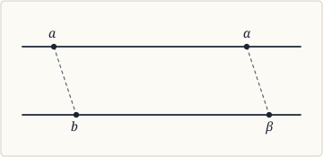
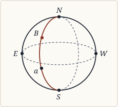
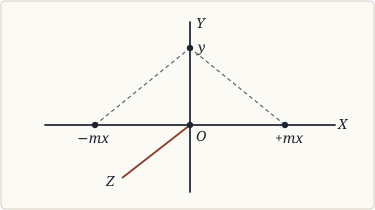

CHAPTER II¶
Critical Account of Some Previous Philosophical Theories of Geometry (§§ 51–101, pp. 54–116)
Preliminary¶
§ 51. A criticism of representative modern theories need not begin before Kant¶
51. We have now traced the mathematical development of the theory of geometrical axioms, from the first revolt against Euclid to the present day. We may hope, therefore, to have at our command the technical knowledge required for the philosophy of the subject. The importance of Geometry, in the theories of knowledge which have arisen in the past, can scarcely be exaggerated. In Descartes, we find the whole theory of method dominated by analytical Geometry, of whose fruitfulness he was justly proud. In Spinoza, the paramount influence of Geometry is too obvious to require comment. Among mathematicians, Newton’s belief in absolute space was long supreme, and is still responsible for the current formulation of the laws of motion. Against this belief on the one hand, and against Leibnitz’s theory of space on the other, and not, as Caird has pointed out [1], against Hume’s empiricism, was directed that keystone of the Critical Philosophy, the Kantian doctrine of space. Thus Geometry has been, throughout, of supreme importance in the theory of knowledge.
But in a criticism of representative modern theories of Geometry, which is designed to be, not a history of the subject, but an introduction to, and defence of, the views of the author, it will not be necessary to discuss any more ancient theory than that of Kant. Kant’s views on this subject, true or false, have so dominated subsequent thought, that whether they were accepted or rejected, they seemed equally potent in forming the opinions, and the manner of exposition, of almost all later writers.
Kant.¶
§ 52. Kant’s doctrine must be taken, in an argument about Geometry, on its purely logical side¶
52. It is not my purpose, in this chapter, to add to the voluminous literature of Kantian criticism, but only to discuss the bearing of Metageometry on the argument of the Transcendental Aesthetic, and the aspect under which this argument must be viewed in a discussion of Geometry [2]. On this point several misunderstandings seem to me to have had wide prevalence, both among friends and foes, and these misunderstandings I shall endeavour, if I can, to remove.
In the first place, what does Kant’s doctrine mean for Geometry? Obviously not the aspect of the doctrine which has been attacked by psychologists, the “Kantian machine-shop” as James calls it—at any rate, if this can be clearly separated from the logical aspect. The question whether space is given in sensation, or whether, as Kant maintained, it is given by an intuition to which no external matter corresponds, may for the present be disregarded. If, indeed, we held the view which seems crudely to sum up the standpoint of the Critique, the view that all certain knowledge is self-knowledge, then we should be committed, if we had decided that Geometry was apodeictic, to the view that space is subjective. But even then, the psychological question could only arise when the epistemological question had been solved, and could not, therefore, be taken into account in our first investigation. The question before us is precisely the question whether, or how far, Geometry is apodeictic, and for the moment we have only to investigate this question, without fear of psychological consequences.
§ 53. Kant contends that since Geometry is apodeictic, space must be à priori and subjective, while since space is à priori and subjective, Geometry must be apodeictic¶
53. Now on this question, as on almost all questions in the Aesthetic or the Analytic, Kant’s argument is twofold. On the one hand, he says, Geometry is known to have apodeictic certainty: therefore space must be à priori and subjective. On the other hand, it follows, from grounds independent of Geometry, that space is subjective and à priori; therefore Geometry must have apodeictic certainty. These two arguments are not clearly distinguished in the Aesthetic, but a little analysis, I think, will disentangle them. Thus in the first edition, the first two arguments deduce, from non-geometrical grounds, the apriority of space; the third deduces the apodeictic certainty of Geometry, and maintains, conversely, that no other view can account for this certainty [3]; the last two arguments only maintain that space is an intuition, not a concept. In the second edition, the double argument is clearer, the apriority of space being proved independently of Geometry in the metaphysical deduction, and deduced from the certainty of Geometry, as the only possible explanation of this, in the transcendental deduction. In the Prolegomena, the latter argument alone is used, but in the Critique both are employed.
§ 54. Metageometry has upset the first line of argument, not the second¶
54. Now it must be admitted, I think, that Metageometry has destroyed the legitimacy of the argument from Geometry to space; we can no longer affirm, on purely geometrical grounds, the apodeictic certainty of Euclid. But unless Metageometry has done more than this—unless it has proved, what I believe it alone cannot prove, that Euclid has not apodeictic certainty—then Kant’s other line of argument retains what force it may ever have had. The actual space we know, it may say, is admittedly Euclidean, and is proved, without any reference to Geometry, to be à priori; hence Euclid has apodeictic certainty, and non-Euclid stands condemned. To this it is no answer to urge, with the Metageometers, that non-Euclidean systems are logically self-consistent; for Kant is careful to argue that geometrical reasoning, by virtue of our intuition of space, is synthetic, and cannot, though à priori, be upheld by the principle of contradiction alone [4]. Unless non-Euclideans can prove, what they have certainly failed to prove up to the present, that we can frame an intuition of non-Euclidean spaces, Kant’s position cannot be upset by Metageometry alone, but must also be attacked, if it is to be successfully attacked, on its purely philosophical side.
§ 55. The second may be attacked by criticizing either the distinction of synthetic and analytic judgments, or the first two arguments of the metaphysical deduction of space¶
55. For such an attack, two roads lie open: either we may disprove the first two arguments of the Aesthetic, or we may criticize, from the standpoint of general logic, the Kantian doctrine of synthetic à priori judgments and their connection with subjectivity. Both these attacks, I believe, could be conducted with some success; but if we are to disprove the apodeictic certainty of Geometry, one or other is essential, and both, I believe, will be found only partially successful. It will be my aim to prove, in discussing these two lines of attack, (1) that the distinction of synthetic and analytic judgments is untenable, and further, that the principle of contradiction can only give fruitful results on the assumption that experience in general, or, in a particular science, some special branch of experience, is to be formally possible; (2) that the first two arguments of the Transcendental Aesthetic suffice to prove, not Euclidean space, but some form of externality—which may be sensational or intuitional, but not merely conceptual—a necessary prerequisite of experience of an external world. In the third and fourth chapters, I shall contend, as a result of these conclusions, that those axioms, which Euclid and Metageometry have in common, coincide with those properties of any form of externality which are deducible, by the principle of contradiction, from the possibility of experience of an external world. These properties, then, may be said, though not quite in the Kantian sense, to be à priori properties of space, and as to these, I think, a modified Kantian position may be maintained. But the question of the subjective or objective nature of space may be left wholly out of account during the course of this discussion, which will gain by dealing exclusively with logical, as opposed to psychological points of view.
§ 56. Modern Logic regards every judgment as both synthetic and analytic,¶
56. (1) Kant’s logical position. The doctrine of synthetic and analytic judgments—at any rate if this is taken as the corner-stone of Epistemology—has been so completely rejected by most modern logicians [5], that it would demand little attention here, but for the fact that an enthusiastic French Kantian, M. Renouvier, has recently appealed to it, with perfect confidence, on the very question of Geometry [6]. And it must be owned, with M. Renouvier, that if such judgments existed, in the Kantian sense, non-Euclidean Geometry, which makes no appeal to intuition, could have nothing to say against them. M. Renouvier’s contention, therefore, forces us briefly to review the arguments against Kant’s doctrine, and briefly to discuss what logical canon is to replace it.
Every judgment—so modern logic contends—is both synthetic and analytic; it combines parts into a whole, and analyses a whole into parts [7]. If this be so, the distinction of analysis and synthesis, whatever may be its importance in pure Logic, can have no value in Epistemology. But such a doctrine, it must be observed, allows full scope to the principle of contradiction: this criterion, since all judgments, in one aspect at least, are analytic, is applicable to all judgments alike. On the other hand, the whole which is analysed must be supposed already given, before the parts can be mutually contradictory: for only by connection in a given whole can two parts or adjectives be incompatible. Thus the principle of contradiction remains barren until we already have some judgments, and even some inference: for the parts may be regarded, to some extent, as an inference from the whole, or vice versâ. When once the arch of knowledge is constructed, the parts support one another, and the principle of contradiction is the keystone: but until the arch is built, the keystone remains suspended, unsupported and unsupporting, in the empty air. In other words, knowledge once existent can be analysed, but knowledge which should have to win every inch of the way against a critical scepticism, could never begin, and could never attain that circular condition in which alone it can stand.
But Kant’s doctrine, if true, is designed to restrain a critical scepticism even where it might be effective. Certain fundamental propositions, he says, are not deducible from logic, i.e. their contradictories are not self-contradictory; they combine a subject and predicate which cannot, in any purely logical way, be shewn to have any connection, and yet these judgments have apodeictic certainty. But concerning such judgments, Kant is generally careful not to rely upon the mere subjective conviction that they are undeniable: he proves, with every precaution, that without them experience would be impossible. Experience consists in the combination of terms which formal logic leaves apart, and presupposes, therefore, certain judgments by which a framework is made for bringing such terms together. Without these judgments—so Kant contends—all synthesis and all experience would be impossible. If, therefore, the detail of the Kantian reasoning be sound, his results may be obtained by the principle of contradiction plus the possibility of experience, as well as by his distinction of synthetic and analytic judgments.
Logic, at the present day, arrogates to itself at once a wider and a narrower sphere than Kant allowed to it. Wider, because it believes itself capable of condemning any false principle or postulate; narrower, because it believes that its law of contradiction, without a given whole or a given hypothesis, is powerless, and that two terms, per se, though they may be different, cannot be contradictories, but acquire this relation only by combination in a whole about which something is known, or by connection with a postulate which, for some reason, must be preserved. Thus no judgment, per se, is either analytic or synthetic, for the severance of a judgment from its context robs it of its vitality, and makes it not truly a judgment at all. But in its proper context it is neither purely synthetic nor purely analytic; for while it is the further determination of a given whole, and thus in so far analytic, it also involves the emergence of new relations within this whole, and is so far synthetic.
§ 57. But leaves the à priori, as that which is presupposed in the possibility of experience¶
57. We may retain, however, a distinction roughly corresponding to the Kantian à priori and à posteriori, though less rigid, and more liable to change with the degree of organisation of knowledge. Kant usually endeavoured to prove, as observed above, that his synthetic à priori propositions were necessary prerequisites of experience; now although we cannot retain the term synthetic, we can retain the term à priori, for those assumptions, or those postulates, from which alone the possibility of experience follows. Whatever can be deduced from these postulates, without the aid of the matter of experience, will also, of course, be à priori. From the standpoint of general logic, the laws of thought and the categories, with the indispensable conditions of their applicability, will be alone à priori; but from the standpoint of any special science, we may call à priori whatever renders possible the experience which forms the subject-matter of our science. In Geometry, to particularize, we may call à priori whatever renders possible experience of externality as such.
It is to be observed that this use of the term is at once more rationalistic and less precise than that of Kant. Kant would seem to have supposed himself immediately aware, by inspection, that some knowledge was apodeictic, and its subject-matter, therefore, à priori: but he did not always deduce its apriority from any further principle. Here, however, it is to be shown, before admitting apriority, that the falsehood of the judgment in question would not be effected by a mere change in the matter of experience, but only by a change which should render some branch of experience formally impossible, i.e. inaccessible to our methods of cognition. The above use is also less precise, for it varies according to the specialization of the experience we are assuming possible, and with every progress of knowledge some new connection is perceived, two previously isolated judgments are brought into logical relation, and the à priori may thus, at any moment, enlarge its sphere, as more is found deducible from fundamental postulates.
§ 58. Kant’s first two arguments as to space suffice to prove some form of externality, but not necessarily Euclidean space, a necessary condition of experience¶
58. (2) Kant’s arguments for the apriority of space. Having now discussed the logical canon to be used as regards the à priori, we may proceed to test Kant’s arguments as regards space. The argument from Geometry, as remarked above, is upset by Metageometry, at least so far as those properties are concerned, which belong to Euclid but not to non-Euclidean spaces; as regards the common properties of both kinds of space, we cannot decide on their apriority till we have discussed the consequences of denying them, which will be done in Chapter III. As regards the two arguments which prove that space is an intuition, not a concept, they would call for much discussion in a special criticism of Kant, but here they may be passed by with the obvious comment that infinite homogeneous Euclidean space is a concept, not an intuition—a concept invented to explain an intuition, it is true, but still a pure concept [8]. And it is this pure concept which, in all discussions of Geometry, is primarily to be dealt with; the intuition need only be referred to where it throws light on the functions or the nature of the concept. The second of Kant’s arguments, that we can imagine empty space, though not the absence of space, is false if it means a space without matter anywhere, and irrelevant if it merely means a space between matters and regarded as empty [9]. The only argument of importance, then, is the first argument. But I must insist, at the outset, that our problem is purely logical, and that all psychological implications must be excluded to the utmost possible extent. Moreover, as will be proved in Chapter IV., the proper function of space is to distinguish between different presented things, not between the Self and the object of sensation or perception. The argument then becomes the following: consciousness of a world of mutually external things demands, in presentations, a cognitive but non-inferential element leading to the discrimination of the objects presented. This element must be non-inferential, for from whatever number or combination of presentations, which did not of themselves demand diversity in their objects, I could never be led to infer the mutual externality of their objects. Kant says: “In order that sensations may be ascribed to something external to me … and similarly in order that I may be able to present them as outside and beside one another, … the presentation of space must be already present.” But this goes rather too far: in the first place, the question should be only as to the mutual externality of presented things, not as to their externality to the Self [10]; and in the second place, things will appear mutually external if I have the presentation of any form of externality, whether Euclidean or non-Euclidean. Whatever may be true of the psychological scope of this argument—whose validity is here irrelevant—the logical scope extends, not to Euclidean space, but only to any form of externality which could exist intuitively, and permit knowledge, in beings with our laws of thought, of a world of diverse but interrelated things.
Moreover externality, to render the scope of the argument wholly logical, must not be left with a sensational or intuitional meaning, though it must be supposed given in sensation or intuition. It must mean, in this argument, the fact of Otherness [11], the fact of being different from some other thing: it must involve the distinction between different things, and must be that element, in a cognitive state, which leads us to discriminate constituent parts in its object. So much, then, would appear to result from Kant’s argument, that experience of diverse but interrelated things demands, as a necessary prerequisite, some sensational or intuitional element, in perception, by which we are led to attribute complexity to objects of perception [12]; that this element, in its isolation may be called a form of externality; and that those properties of this form, if any such be found, which can be deduced from its mere function of rendering experience of interrelated diversity possible, are to be regarded as à priori. What these properties are, and how the various lines of argument here suggested converge to a single result, we shall see in Chapters III. and IV.
§ 59. Among the successors of Kant, Herbart alone advanced the theory of Geometry, by influencing Riemann¶
59. In the philosophers who followed Kant, Metaphysics, for the most part, so predominated over Epistemology, that little was added to the theory of Geometry. What was added, came indirectly from the one philosopher who stood out against the purely ontological speculations of his time, namely Herbart. Herbart’s actual views on Geometry, which are to be found chiefly in the first section of his Synechologie, are not of any great value, and have borne no great fruit in the development of the subject. But his psychological theory of space, his construction of extension out of series of points, his comparison of space with the tone and colour-series, his general preference for the discrete above the continuous, and finally his belief in the great importance of classifying space with other forms of series (Reihenformen [13]), gave rise to many of Riemann’s epoch-making speculations, and encouraged the attempt to explain the nature of space by its analytical and quantitative aspect alone [14]. Through his influence on Riemann, he acquired, indirectly, a great importance in geometrical philosophy. To Riemann’s dissertation, which we have already discussed in its mathematical aspect, we must now return, considering, this time, only its philosophical views.
Riemann.¶
§ 60. Riemann regarded space as a particular kind of manifold, i.e. wholly quantitatively¶
60. The aim of Riemann’s dissertation, as we saw in Chapter I., was to define space as a species of manifold, i.e. as a particular kind of collection of magnitudes. It was thus assumed, to begin with, that spatial figures could be regarded as magnitudes, and the axioms which emerged, accordingly, determined only the particular place of these among the many algebraically possible varieties of magnitudes. The resulting formulation of the axioms—while, from the mathematical standpoint of metrical Geometry, it was almost wholly laudable—must, from the standpoint of philosophy, be regarded, in my opinion, as a petitio principii. For when we have arrived at regarding spatial figures as magnitudes, we have already traversed the most difficult part of the ground. The axioms of metrical Geometry—and it is metrical Geometry, exclusively, which is considered in Riemann’s Essay—will appear, in Chapter III., to be divisible into two classes. Of these, the first class—which contains the axioms common to Euclid and Metageometry, the only axioms seriously discussed by Riemann—are not the results of measurement, nor of any conception of magnitude, but are conditions to be fulfilled before measurement becomes possible. The second class only—those which express the difference between Euclidean and non-Euclidean spaces—can be deduced as results of measurement or of conceptions of magnitude. As regards the first class, on the contrary, we shall see that the relativity of position—by which space is distinguished from all other known manifolds, except time—leads logically to the necessity of three of the most distinctive axioms of Geometry, and yet this relativity cannot be called a deduction from conceptions of magnitude. In analytical Geometry, owing to the fact that coordinate systems start from points, and hence build up lines and surfaces, it is easy to suppose that points can be given independently of lines and of each other, and thus the relativity of position is lost sight of. The error thus suggested by mathematics was probably reinforced by Herbart’s theory of space, which, by its serial character, as we have seen, appeared to him to facilitate a construction out of successive points, and to which Riemann acknowledges his indebtedness both in his Dissertation and elsewhere. The same error reappears in Helmholtz, in whom it is probably due wholly to the methods of analytical Geometry. It is a striking fact that, throughout the writings of these two men, there is not, so far as I know, one allusion to the relativity of position, that property of space from which, as our next chapter will shew, the richest quarry of consequences can be extracted. This is not a result of any conception of magnitude, but follows from the nature of our space-intuition; yet no one, surely, could call it empirical, since it is bound up in the very possibility of locating things there as opposed to here.
§ 61. He therefore unduly neglected the qualitative adjectives of space¶
61. Indeed we can see, from a purely logical consideration of the judgment of quantity, that Riemann’s manner of approaching the problem can never, by legitimate methods, attain to a philosophically sound formulation of the axioms. For quantity is a result of comparison of two qualitatively similar objects, and the judgment of quantity neglects altogether the qualitative aspect of the objects compared. Hence a knowledge of the essential properties of space can never be obtained from judgments of quantity, which neglect these properties, while they yet presuppose them. As well might one hope to learn the nature of man from a census. Moreover, the judgment of quantity is the result of comparison, and therefore presupposes the possibility of comparison. To know whether, or by what means, comparison is possible, we must know the qualities of the things compared and of the medium in which comparison is effected; while to know that quantitative comparison is possible, we must know that there is a qualitative identity between the things compared, which again involves a previous qualitative knowledge. When spatial figures have once been reduced to quantity, their quality has already been neglected, as known and similar to the quality of other figures. To hope, therefore, for the qualities of space, from a comparison of its expression as pure quantity with other pure quantities, is an error natural to an analytical geometer, but an error, none the less, from which there is no return to the qualitative basis of spatial quantity.
§ 62. His philosophy rests on a vicious disjunction¶
62. We must entirely dissent, therefore, from the disjunction which underlies Riemann’s philosophy of space. Either the axioms must be consequences of general conceptions of magnitude, he thinks, or else they can only be proved by experience (p. 255). Whatever can be derived from general conceptions of magnitude, we may retort, cannot be an à priori adjective of space: for all the necessary adjectives of space are presupposed in any judgment of spatial quantity, and cannot, therefore, be consequences of such a judgment. Riemann’s disjunction, accordingly, since one of its alternatives is obviously impossible, really begs the question. In formulating the axioms of metrical Geometry, our question should be: What axioms, i.e. what adjectives of space, must be presupposed, in order that quantitative comparison of the parts of space may be possible at all? And only when we have determined these conditions, which are à priori necessary to any quantitative science of space, does the second question arise: what inferences can we draw, as to space, from the observed results of this quantitative science, i.e. of this measurement of spatial figures? The conditions of measurement themselves, though not results of any conception of magnitude, will be à priori, if it can be shown that, without them, experience of externality would be impossible.
After this initial protest against Riemann’s general philosophical position, let us proceed to examine, in detail, his use of the notion of a manifold.
§ 63. His definition of a manifold is obscure,¶
63. In the first place there is, if I am not mistaken, considerable obscurity in the definition of a manifold, of which an almost verbal rendering was given in Chapter I. What is meant, to begin with, by a general conception capable of various determinations? Does not this property belong to all conceptions? It affords, certainly, a basis for counting, but if continuous quantity is to arise, we must, surely, have some less discrete formulation. It might afford a basis, for example, for the distinction of points in projective Geometry, but projective Geometry has nothing to do with quantity. Something more fluid and flexible than a conception, one would think, is necessary as the basis of continua. Then, again, what is meant by a quantum of a manifold? In space, the answer is obvious: what is meant is a piece of volume. But how about Riemann’s other continuous manifold, colour? Does a quantum of colour mean a single line in the spectrum, or a band of finite thickness? In either case, what are the magnitudes to be compared? And how is superposition necessary, or even possible? A colour is fixed by its position in the spectrum: two lines in the same spectrum cannot be superposed, and two lines in different spectra need not be—their positions in their respective spectra suffice, or even, roughly, their immediate sense-quality. The fact is, Riemann had space in his mind from the start, and many of the properties, which he enunciates as belonging to all manifolds, belong, as a matter of fact, only to space. It is far from clear what the magnitudes are which the various determinations make possible. Do these magnitudes measure the elements of the manifold, or the relations between elements? This is surely a very fundamental point, but it is one which Riemann never touches on. In the former case, the superposition which he speaks of becomes unnecessary, since the magnitude is inherent in the element considered. We do not require superposition to measure quantities corresponding to different tones or colours; these can be discovered by analysis of single tones or colours. With space, on the other hand, if we seek for elements, we can find none except points, and no analysis of a point will find magnitudes inherent in it—such magnitudes are a fiction of coordinate Geometry. The magnitudes which space deals with, as we shall see in Chapter III., are relations between points, and it is for this reason that superposition is essential to space-measurement. There is no inherent quality in a single point, as there is in a single colour, by which it can be quantitatively distinguished from another. Thus the conception of a manifold, as defined by Riemann, either does not include colours, or does not involve superposition as the only means of measurement. From this dilemma there is no escape.
§ 64. And his definition of measurement applies only to space¶
64. But if “measurement consists in a superposition of the magnitudes compared” (p. 256), does it not follow immediately that measurement is logically possible only where such superposition leaves the magnitudes unchanged? And therefore that measurement, as above defined, involves, as an à priori condition, that magnitudes are unchanged by motion? This consequence is not drawn by Riemann; indeed he proceeds immediately (pp. 256–7) to consider what he calls a general portion of the doctrine of magnitude (Grössenlehre), independent of measurement. But how is any doctrine of magnitude possible, in which the magnitudes cannot be measured? The reason of the confusion is, that Riemann’s definition of measurement is applicable to no single manifold except space, since it depends on the noteworthy property that what we measure in Geometry is not points, but relations between points, and the latter, though not the former, may of course be unaltered by motion. Let us try, in illustration, to apply Riemann’s definition of measurement to colours. We must remember that motion, in dealing with the colour manifold, means—not motion in space but—motion in the colour manifold itself. Now since every point of the colour manifold is completely determined by three magnitudes, which are given in fact, and cannot be arbitrarily chosen, it is plain that measurement by superposition—involving, as it does, motion, and therefore change in these determining magnitudes—is totally out of the question. The superposition of one colour on another, as a means of measurement, is sheer nonsense. And yet measurement is possible in the colour-manifold, by means of Helmholtz’s law of mixture (Mischungsgesetz); but the measurement is of every separate element, not of the relations between elements, and is thus radically different from space-measurement [15]. The elements are not, like points in space, qualitatively alike, and distinguished by the mere fact of their mutual externality. What we have, in colours, is three fundamental qualitatively distinct elements, out of certain proportions of which we can build up all the other elements of the manifold—each of the resulting elements having the same combination of qualitative diversity and similarity as the three original elements. But in space, what could we make of such a procedure? Given three points, how are we to combine them in certain proportions? The phrase is meaningless. If some one makes the obvious retort, that we have to combine lines, not points, my rejoinder is equally obvious. To begin with, lines are not elements. Metaphysically, space has no elements, being, as the sequel will show, mere relations between non-spatial elements. Mathematically, this fact exhibits itself in the self-contradictory notion of the point, or zero magnitude in space, as the limit in our vain search for spatial elements. But even if we allow the line to pass as the spatial element, what does the combination of three lines in definite proportions give us? It gives us, simply, the coordinates of a point. Here again we see a great difference between the colour and space-manifolds. In colours, the combination of magnitudes gives a new magnitude of the same kind; in space, it defines, not a magnitude at all, but a would-be element of a different kind from the defining magnitudes. In the tone-manifold, we should find still different conditions. Here, no one of the measuring magnitudes can vanish without the tone vanishing too, and all three are so bound up together, in the single resulting sensation, that none can exist without a finite quantity of the others. They are all qualitatively different, both from each other, and from any possible tone, being constituents of it, as mass and velocity are constituents of momentum. All these different conditions require to be examined, before a manifold can be completely defined; and until we have conducted such an examination in detail, we cannot pronounce as to the à priori or empirical nature of the laws of the manifold. As regards space, I have attempted such an examination in the third and fourth chapters of this Essay.
§ 65. Though mathematically invaluable, his view of space as a manifold is philosophically misleading¶
65. I do not wish to deny, however, the great value of the conception of space as a manifold. On the contrary, this conception seems to have become essential to any treatment of the question. I only wish to urge that the purely algebraical treatment of any manifold, important as it may be in deducing fresh consequences from known premisses, tends rather to conceal than to make clear the basis of the premisses themselves, and is therefore misleading in a philosophical investigation. For mathematics, where quantity reigns supreme, Riemann’s conception has proved itself abundantly fruitful; for philosophy, on the contrary, where quantity appears rather as a cloak to conceal the qualities it abstracts from, the conception seems to me more productive of error and confusion than of sound doctrine.
We are thus brought back to the point from which we started, namely, the falsity of Riemann’s initial disjunction, and the consequent fallacy in his proof of the empirical nature of the axioms. His philosophy is chiefly vitiated, to my mind, by this fallacy, and by the uncritical assumption that a metrical coordinate system can be set up independently of any axioms as to space-measurement [16]. Riemann has failed to observe, what I have endeavoured to prove in the next chapter, that, unless space had a strictly constant measure of curvature, Geometry would become impossible; also that the absence of constant measure of curvature involves absolute position, which is an absurdity. Hence he is led to the conclusion that all geometrical axioms are empirical, and may not hold in the infinitesimal, where observation is impossible. Thus he says (p. 267): “Now the empirical conceptions, on which spatial measurements are based, the conceptions of the rigid body and the light-ray, appear to lose their validity in the infinitesimal: it is therefore quite conceivable that the relations of spatial magnitudes in the infinitesimal do not correspond to the presuppositions of Geometry, and this would, in fact, have to be assumed, as soon as it would enable us to explain the phenomena more simply.” From this conclusion I must entirely dissent. In very large spaces, there might be a departure from Euclid; for they depend upon the axiom of parallels, which is not contained in the axiom of Free Mobility; but in the infinitesimal, departures from Euclid could only be due to the absence of Free Mobility, which, as I hope my third chapter will show, is once for all impossible.
Helmholtz.¶
§ 66. Helmholtz attacked Kant both on the mathematical and on the psychological side;¶
66. Helmholtz, like Riemann, was important both in the mathematics and in the philosophy of Geometry. From the mathematical point of view, his work has been already considered in Chapter I.; the consideration of his philosophy, which must occupy us here, will be a more serious task. Like Riemann, he endeavoured to prove that all the axioms are empirical, and like Riemann, he based his proof chiefly on Metageometry. He had an additional resource, however, in the physiology of the senses, which first led him to reject the Transcendental Aesthetic, and enabled him to attack Kant from the psychological as well as the mathematical side [17].
The principal topics, for a criticism of Helmholtz, are three: First, his criterion of the à priori; second, his discussion with Land as to the “imaginability” of non-Euclidean spaces; third—and this is by far the most important of the three—his theory of the dependence of Geometry on Mechanics. Let us discuss these three points successively.
§ 67. But his criterion of apriority is changeable and often invalid;¶
67. Helmholtz’s criterion of apriority is difficult to discover, as he never, to my knowledge, gives a precise statement of it. From his discussion of physical and transcendental Geometry [18], however, it would appear that he regards as empirical whatever applies to empirical matter. For he there maintains, that even if space were an à priori form, yet any Geometry, which aimed at an application to Physics, would, since the actual places of bodies are not known à priori, be necessarily empirical [19]. It seems the more probable that he regards this as a possible criterion, as it is adopted, in several passages, by his disciple Erdmann [20], and so strange a test could hardly be accepted by a philosopher, unless he had found it in his master. I have called this a strange test, because it seems to me completely to ignore the work of the Critical Philosophy. For if there is one thing which, one might have hoped, had been made sufficiently clear by Kant’s Critique, it is this, that knowledge which is à priori, being itself the condition of possible experience, applies—and in Kant’s view, applies only—to empirical matter. Helmholtz and Erdmann, therefore, in setting up this test without discussion, simply ignore the existence of Kant and the possibility of a transcendental argument. Helmholtz assumes always that empirical knowledge must be wholly empirical, that there can be no à priori conditions of the experience in question, that experience will always be possible, and may give any kind of result. Thus in discussing “physical” Geometry, he assumes that the possibility of empirical measurement involves no à priori axioms, and that no à priori element can be contained in the process. This assumption, as we shall see in Chapter III., is quite unwarrantable: certain properties of space, in fact, are involved in the possibility of measuring matter. In spite of the fact, therefore, that we apply measurement to empirical matter, and that our results are therefore empirical, there may well be an à priori element in measurement, which is presupposed in its possibility. Such a criterion, therefore, must pronounce everything empirical, but must itself be pronounced worthless.
Another and a better criterion, it is true, is also to be found in Helmholtz, and has also been adopted by Erdmann. Whatever might, by a different experience, have been rendered different—so this criterion contends—must itself be dependent on experience, and so empirical. This criterion seems perfectly sound, but Helmholtz’s use of it is usually vitiated by his neglecting to prove the possibility of the different experience in question. He says, for example, that if our experience showed us only bodies which changed their shapes in motion, we should not arrive at the axiom of Congruence, which he pronounces accordingly to be empirical. But I shall endeavour to prove, in Chapter III., that without the axiom of Congruence, experience of spatial magnitude would be impossible. If my proof be correct, it follows that no experience can ever reveal spatial magnitudes which contradict this axiom—a possibility which Helmholtz nowhere discusses, in setting up his hypothetical experience. Thus this second criterion, though perfectly sound, requires always an accompanying transcendental argument, as to the conditions of possible experience. But this accompaniment is seldom to be found in Helmholtz.
§ 68. His proof that non-Euclidean spaces are imaginable is inconclusive;¶
68. One of the few cases, in which Helmholtz has attempted such an accompaniment, occurs in connection with our second point, the imaginability of non-Euclidean spaces. The argument on this point was elicited by Helmholtz’s Kantian opponents, who maintained that the merely logical possibility of these spaces was irrelevant, since the basis of Geometry was not logic, but intuition. The axioms, they said, are synthetic propositions, and their contraries are, therefore, not self-contradictory; they are nevertheless apodeictic propositions, since no other intuition than the Euclidean is possible to us [21]. I have already criticized this line of argument in the beginning of the present chapter. Helmholtz’s criticism, however, was different: admitting the internal consistency of the argument, he denied one of its premisses. We can imagine non-Euclidean spaces, he said, though their unfamiliarity makes this difficult. From this view it followed, of course, that Kant’s argument, even if it were formally valid, could not prove the apriority of Euclidean space in particular, but only of that general space which included Euclid and non-Euclid alike [22].
Although I agree with Helmholtz in thinking the distinction between Euclidean and non-Euclidean spaces empirical, I cannot think his argument on the “imaginability” of the latter a very happy one. The validity of any proof must turn, obviously, on the definition of imaginability. The definition which Helmholtz gives in his answer to Land is as follows: Imaginability requires “die vollständige Vorstellbarkeit derjenigen Sinneseindrücke, welche das betreffende Object in uns nach den bekannten Gesetzen unserer Sinnesorgane unter allen denkbaren Bedingungen der Beobachtung erregen, und wodurch es sich von anderen ähnlichen Objecten unterscheiden würde” (Wiss. Abh. II. p. 644). This definition is not very clear, owing to the ambiguity of the word “Vorstellbarkeit.” The following definition seems less ambiguous: “Wenn die Reihe der Sinneseindrücke vollständig und eindeutig angegeben werden kann, muss man m. E. die Sache für anschaulich vorstellbar erklären” (Vorträge und Reden, II. p. 234). This makes clear, what also appears from his manner of proof, that he regards things as imaginable which can be described in conceptual terms. Such, as Land remarks (Mind, Vol. II. p. 45), “is not the sense required for argumentation in this case.” That Land’s criticism is just, is shown by Helmholtz’s proof for non-Euclidean spaces, for it consists only in an analogy to the volume inside a sphere, which is mathematically obtained thus: We take the symbols representing magnitudes in “pseudo-spherical” (hyperbolic) space, and give them a new Euclidean meaning; thus all our symbolic propositions become capable of two interpretations, one for pseudo-spherical space, and one for the volume inside a sphere. It is, however, sufficiently obvious that this procedure, though it enables us to describe our new space, does not enable us to imagine it, in the sense of calling up images of the way things would look in it. We really derive, from this analogy, no more knowledge than a man born blind may derive, as to light, from an analogy with heat. The dictum “Nihil est in intellectu quod non fuerit ante in sensu,” would unquestionably be true, if for intellect we were to substitute imagination; it is vain, therefore, if our actual space be Euclidean, to hope for a power of imagining a non-Euclidean space. What Helmholtz might, I believe with perfect truth, have urged against Land, is that the image we actually have of space is not sufficiently accurate to exclude, in the actual space we know, all possibility of a slight departure from the Euclidean type. But in maintaining that we cannot imagine, though we can conceive and describe, a space different from that we actually have, Land is, in my opinion, unquestionably in the right. For a pure Kantian, who maintains, with Land, that none of the axioms can be proved, this question is of great importance. But if, as I have maintained, some of the axioms are susceptible of a transcendental proof, while the others can be verified empirically, the question is freed from psychological implications, and the imaginability or non-imaginability of metageometrical spaces becomes unimportant.
§ 69. And his assertion of the dependence of measurement on rigid bodies, which may be taken in three senses,¶
69. We come now to the third and most important question, the relation of Geometry to Mechanics. There are three senses in which Helmholtz’s appeal to rigid bodies may be taken: the first, I think, is the sense in which he originally intended it; the second seems to be the sense which he adopted in his defence against Land; while the third is admitted by Land, and will be admitted in the following argument. These three senses are as follows:
(1) It may be asserted that the actual meaning of the axiom of Free Mobility lies in the assertion of empirical rigid bodies, and that the two propositions are equivalent to one another. This is certainly false.
(2) The axiom of Free Mobility, it may be said, is logically distinguishable from the assertion of rigid bodies, and may even be not empirical; but it is barren, even for pure Geometry, without the aid of measures, which must themselves be empirical rigid bodies. This sense is more plausible than the first, but I believe we can show that, in this sense also, the proposition is false.
(3) For pure Geometry and the abstract study of space, it may be said, Free Mobility, as applied to an abstract geometrical matter, gives a sufficient possibility of quantitative comparison; but the moment we extend our results to mixed mathematics, and apply them to empirically given matter, we require also, as measures, empirically given rigid bodies, or bodies, at least, whose departures from rigidity are empirically known. In this sense, I admit, the proposition is correct [23].
In discussing these three meanings, I shall not confine myself strictly to the text of Helmholtz or Land: if I endeavoured to do so, I should be met by the difficulty that neither of them defines the à priori, and that each is too much inclined, in my opinion, to test it by psychological criteria. I shall, therefore, take the three meanings in turn, without laying stress on their historical adequacy to the views of Land or Helmholtz.
§ 70. Is wholly false if it means that the axiom of Congruence actually asserts the existence of rigid bodies,¶
70. (1) Congruence may be taken to mean—as Helmholtz would certainly seem to desire—that we find actual bodies, in our mechanical experience, to preserve their shapes with approximate constancy, and that we infer, from this experience, the homogeneity of space. This view, in my opinion, radically misconceives the nature of measurement, and of the axioms involved in it. For what is meant by the non-rigidity of a body? We mean, simply, that it has changed its shape. But this involves the possibility of comparison with its former shape, in other words, of measurement. In order, therefore, that there may be any question of rigidity or non-rigidity, the measurement of spatial magnitudes must be already possible. It follows that measurement cannot, without a vicious circle, be itself derived from experience of rigid bodies. Geometrical measurement, in fact, is the comparison of spatial magnitudes, and such comparison involves, as will be proved at length in Chapter III., the homogeneity of space. This is, therefore, the logical prerequisite of all experience of rigid bodies, and cannot be the result of such experience. Without the homogeneity of space, the very notion of rigidity or non-rigidity could not exist, since these mean, respectively, the constancy or inconstancy of spatial magnitude in pieces of matter, and both alike, therefore, presuppose the possibility of spatial measurement. From the homogeneity of space, we learn that a body, when it moves, will not change its shape without some physical cause; that it actually does not change its shape, is never asserted, and is indeed known to be false. As soon as measurement is possible, actual changes of shape can be estimated, and their empirical causes can be sought. But if space were not homogeneous, measurement would be impossible, constant shape would be a meaningless phrase, and rigidity could never be experienced. Congruence asserts, in short, that a body can, so far as mere space is concerned, move without change of shape; rigidity asserts that it actually does so move—a very different proposition, involving obviously, as its logical prius, the former geometrical proposition.
This argument may be summed up by the following disjunction: If bodies change their shapes in motion—and to some extent, since no body is perfectly rigid, they must all do so—then one of two cases must occur. Either the changes of shape, as bodies move from place to place, follow no geometrical law, are not, for instance, functions of the amount or direction of motion; in which case the law of causation requires that they should not be effects of the change of place, but of some simultaneous non-geometrical change, such as temperature. Or the changes are regular, and the shape S becomes, in a new position p, Sf(p). In this case, the law of concomitant variations leads us to attribute the change of shape to the mere motion, and shape thus becomes a function of absolute position. But this is absurd, for position means merely a relation or set of relations; it is impossible, therefore, that mere position should be able to effect changes in a body. Position is one term in a relation, not a thing per se; it cannot, therefore, act on a thing, nor exist by itself, apart from the other terms of the relation. Thus Helmholtz’s view, that Congruence depends on the existence of rigid bodies, must, since it involves absolute position, be condemned as a logical fallacy. Congruence, in fact, as I shall prove more fully in Chapter III., is an à priori deduction from the relativity of position.
§ 71. Is untrue if it means that the necessary reference of geometrical propositions to matter renders pure Geometry empirical,¶
71. (2) The above argument seems to me to answer satisfactorily Helmholtz’s contention in the precise form which he first gave it. The axiom of Congruence, we must agree, is logically distinguishable from the existence of rigid bodies. Nevertheless some reference to matter is logically involved in Geometry [24], but whether this reference makes Geometry empirical, or does not, rather, show an à priori element in dynamics, is a further question.
The reference to matter is necessitated by the homogeneity of empty space. For so long as we leave matter out of account, one position is perfectly indistinguishable from another, and a science of the relations of positions is impossible. Indeed, before spatial relations can arise at all, the homogeneity of empty space must be destroyed, and this destruction must be effected by matter. The blank page is useless to the geometer until he defaces its homogeneity by lines in ink or pencil. No spatial figures, in short, are conceivable, without a reference to a not purely spatial matter. Again, if Congruence is ever to be used, there must be motion: but a purely geometrical point, being defined solely by its spatial attributes, cannot be supposed to move without a contradiction in terms. What moves, therefore, must be matter. Hence, in order that motion may afford a test of equality, we must have some matter which is known to be unaffected throughout the motion, that is, we must have some rigid bodies. And the difficulty is, that these bodies must not only undergo no change due solely to the nature of space, but must, further, be unchanged by their changing relation to other bodies. And here we have a requisite which can no longer be fulfilled à priori: which, indeed, we know to be, in strictness, untrue. For the forces acting on a body depend upon its spatial relations to other bodies, and changing forces are liable to produce changing configuration. Hence, it would seem, actual measurement must be purely empirical, and must depend on the degree of rigidity to be obtained, during the process of measurement, in the bodies with which we are conversant.
This conclusion, I believe, is valid of all actual measurement. But the possibility of such empirical and approximate rigidity, I must insist, depends on the à priori law that mere motion, apart from the action of other matter, cannot effect a change of shape. For without this law, the effect of other matter would not be discoverable; the laws of motion would be absurd, and Physics would be impossible. Consider the second law, for example: How could we measure the change of motion, if motion itself produced a change in our measures? Or consider the law of gravitation: How could we establish the inverse square, unless we were able, independently of Dynamics, to measure distances? The whole science of Dynamics, in short, is fundamentally dependent on Geometry, and but for the independent possibility of measuring spatial magnitudes, none of the magnitudes of Dynamics could be measured. Time, force, and mass are alike measured by spatial correlates: these correlates are given, for time, by the first law, for force and mass, by the second and third. It is true, then, that an empirical element appears unavoidably in all actual measurement, inasmuch as we can only know empirically that a given piece of matter preserves its shape throughout the necessary change of dynamical relations to other matter involved in motion; but it is further true that, for Geometry—which regards matter simply as supplying the necessary breach in the homogeneity of space, and the necessary term for spatial relations, not as the bearer of forces which change the configuration of other material systems—for Geometry, which deals with this abstract and merely kinematical matter, rigidity is à priori, in so far as the only changes with which it is cognizant—changes of mere position, namely—are incapable of affecting the shapes of the imaginary and abstract bodies with which it deals. To use a scholastic distinction, we may say that matter is the causa essendi of space, but Geometry is the causa cognoscendi of Physics. Without a Geometry independent of Physics, Physics itself, which necessarily assumes the results of Geometry, could never arise; but when Geometry is used in Physics, it loses some of its à priori certainty, and acquires the empirical and approximate character which belongs to all accounts of actual phenomena.
§ 72. And is inadequate to his conclusion if it means, what is true, that actual measurement involves approximately rigid bodies¶
72. (3) This argument leads us to Land’s distinction of physical and geometrical rigidity. The distinction may be expressed—and I think it is better expressed—by distinguishing between the conceptions of matter proper to Dynamics and to Geometry respectively. In Dynamics, we are concerned with matter as subject to and as causing motion, as affected by and as exerting force. We are therefore concerned with the changes of spatial configuration to which material systems are liable: the description and explanation of these changes is the proper subject-matter of all Dynamics. But in order that such a science may exist, it is obviously necessary that spatial configuration should be already measurable. If this were not the case, motion, acceleration and force would remain perfectly indeterminate. Geometry, therefore, must already exist before Dynamics becomes possible: to make Geometry dependent for its possibility on the laws of motion or any of their consequences, is a gross ὕστερον πρότερον. Nevertheless, as we have seen, some sort of matter is essential to Geometry. But this geometrical matter is a more abstract and wholly different matter from that of Dynamics. In order to study space by itself, we reduce the properties of matter to a bare minimum: we avoid entirely the category of causation, so essential to Dynamics, and retain nothing, in our matter, but its spatial adjectives [25]. The kind of rigidity affirmed of this abstract matter—a kind which suffices for the theory of our science, though not for its application to the objects of daily life—is purely geometrical, and asserts no more than this: That since our matter is devoid, ex hypothesi, of causal properties, there remains nothing, in mere empty space, which is capable of changing the configuration of any geometrical system. A change of absolute position, it asserts, is nothing; therefore the only real change involved in motion is a change of relation to other matter; but such other matter, for the purposes of our science, is regarded as destitute of causal powers; hence no change can occur, in the configuration of our system, by the mere effect of motion through empty space. The necessity of such a principle may be shown by a simple reductio ad absurdum, as follows. A motion of translation of the universe as a whole, with constant direction and velocity, is dynamically negligeable; indeed it is, philosophically, no motion at all, for it involves no change in the condition or mutual relations of the things in the universe. But if our geometrical rigidity were denied, the change in the parameter of space might cause all bodies to change their shapes owing to the mere change of absolute position, which is obviously absurd.
To make quite plain the function of rigid bodies in Geometry, let us suppose a liquid geometer in a liquid world. We cannot suppose the liquid perfectly homogeneous and undifferentiated, in the first place because such a liquid would be indistinguishable from empty space, in the second place because our geometer’s body—unless he be a disembodied spirit—will itself constitute a differentiation for him. We may therefore assume
“dim beams,Which amid the streamsWeave a network of coloured light,”
and we may suppose this network to form the occasion for our geometer’s reflections. Then he will be able to imagine a network in which the lines are straight, or circular, or parabolic, or any other shape, and he will be able to infer that such a network, if it can be woven in one part of the fluid, can be woven in another. This will form sufficient basis for his deductions. The superposition he is concerned with—since not actual equality, but only the formal conditions of equality, are the subject-matter of Geometry—is purely ideal, and is unaffected by the impossibility of congealing any actual network. But in order to apply his Geometry to the exigencies of life, he would need some standard of comparison between actual networks, and here, it is true, he would need either a rigid body, or a knowledge of the conditions under which similar networks arose. Moreover these conditions, being necessarily empirical, could hardly be known apart from previous measurement. Hence for applied, though not for pure Geometry, one rigid body at least seems essential.
§ 73. Geometry deals with an abstract matter, whose physical properties are disregarded; and Physics must presuppose Geometry¶
73. The utility, for Dynamics, of our abstract geometrical matter, is sufficiently evident. For having, by its means, a power of determining the configurations of material systems in whatever part of space, and knowing that changes of configuration are not due to mere change of place, we are able to attribute these changes to the action of other matter, and thus to establish the notion of force, which would be impossible if change of shape might be due to empty space.
Thus, to conclude: Geometry requires, if it is to be practically possible, some body or bodies which are either rigid (in the dynamical sense), or known to undergo some definite changes of shape according to some definite law. (These changes, we may suppose, are known by the laws of Physics, which have been experimentally established, and which throughout assume the truth of Geometry.) One or more such bodies are necessary to applied Geometry—but only in the sense in which rulers and compasses are necessary. They are necessary as, in making the Ordnance Survey, an elaborate apparatus was necessary for measuring the base line on Salisbury Plain. But for the theory of Geometry, geometrical rigidity suffices, and geometrical rigidity means only that a shape, which is possible in one part of space, is possible in any other. The empirical element in practice, arising from the purely empirical nature of physical rigidity, is comparable to the empirical inaccuracies arising from the failure to find straight lines or circles in the world—which no one but Mill has regarded as rendering Geometry itself empirical or inaccurate. But to make Geometry await the perfection of Physics, is to make Physics, which depends throughout on Geometry, forever impossible. As well might we leave the formation of numbers until we had counted the houses in Piccadilly.
Erdmann.¶
§ 74. Erdmann accepted the conclusions of Riemann and Helmholtz,¶
74. In connection with Riemann and Helmholtz, it is natural to consider Erdmann’s philosophical work on their theories [26]. This is certainly the most important book on the subject which has appeared from the philosophical side, and in spite of the fact that, like the whole theory of Riemann and Helmholtz, it is inapplicable to projective Geometry, it still deserves a very full discussion.
Erdmann agrees throughout with the conclusions of Riemann and Helmholtz, except on a few points of minor importance; and his views, as this agreement would lead one to expect, are ultra-empirical. Indeed his logic seems—though I say this with hesitation—to be incompatible with any system but that of Mill: there is apparently no distinction, to him, between the general and the universal, and consequently no concept not embodied in a series of instances. Such a theory of logic, to my mind, vitiates most of his work, as it vitiated Riemann’s philosophy [27]. This general criticism will find abundant illustration in the course of our account of Erdmann’s views.
§ 75. And regarded the axioms as necessarily successive steps in classifying space as a species of manifold¶
75. After a general introduction, and a short history of the development of Metageometry, Erdmann proceeds, in his second chapter, to discuss what are the axioms of Euclidean Geometry. The arithmetical axioms, as they are called, he leaves aside, as applying to magnitude in general; what we want here, he says, is a definition of space, for which the geometrical axioms are alone relevant. But a definition of space, he says—following Riemann—demands a genus of which space shall be a species, and this, since our space is psychologically unique, can only be furnished by analytical mathematics (p. 36). Now the space-forms dealt with by Geometry are magnitudes, and conceptions of magnitude are everywhere applied in Geometry. But before Riemann, only particular determinations of space could be exhibited as magnitudes, and thus the desired definition was impossible to obtain. Now, however, we can subsume space as a whole under a general conception of magnitude, and thus obtain, besides the space-intuition and the space-conception, a third form, namely, the conception of space as a magnitude (Grössenbegriff vom Raum, pp. 38–39). The definition of this will give us the complete, but not redundant, system of axioms, which could not be obtained by transforming the general intuition of space into the space-conception, for want of a plurality of instances (p. 40).
§ 76. His deduction involves four fallacious assumptions, namely:¶
76. Before considering the subsequent method of definition, let us reflect on the theories involved in the above account of the conception of space as a magnitude. In the first place, it is assumed that conceptions cannot be formed unless we have a series of separate objects from which to abstract a common property—in other words, that the universal is always the general. In the second place, it is assumed that all definition is classification under a genus. In the third place, the conception of magnitude, if I am not mistaken, is fundamentally misunderstood when it is supposed applicable to space as a whole. But in the fourth place, even if such a conception existed, it could give none of the essential properties of space. Let us consider these four points successively.
§ 77. That conceptions must be abstracted from a series of instances;¶
77. As regards the first point, it is to be observed that people certainly had some conception of space before Riemann invented the notion of a manifold, and that this conception was certainly something other than the common qualities of all the points, lines or figures in space. In the second place, Erdmann’s view would make it impossible to conceive God, unless one were a polytheist, or the universe—unless, like Leibnitz, one imagined a series of possible worlds, set over against God, and none of them, therefore, a true Universe—or, to take an instance more likely to appeal to an empiricist, the necessarily unique centre of mass of the material universe. Any universal, in short, which is a bond or unity between things, and not merely a common property among independent objects, becomes impossible on Erdmann’s view. We cannot, therefore, unless we adopt Mill’s philosophy intact, regard the conception of space as demanding a series of instances from which to abstract. But even if we did so regard it, Riemann’s manifolds would leave us without resources. For Euclidean space still appears as unique, at the end of his series of determinations. We have instances of manifolds, but not instances of Euclidean space. Thus if Erdmann’s theory of conceptions were correct, he would still be left searching in vain for the conception of Euclidean space.
§ 78. That all definition is classification;¶
78. The second point, the view that all definition is classification, is closely allied to the first, and the two together plunge us into the depths of scholastic formal logic. The same instances of things which could not, on Erdmann’s view, be conceived, may now be adduced as things which cannot be defined. Whatever was said above applies here also, and the point need not, therefore, be further discussed [28].
§ 79. That conceptions of magnitude can be applied to space as a whole;¶
79. As regards the third point, the impossibility of applying conceptions of magnitude to space as a whole, a longer argument will be necessary, for we are concerned, here, with the whole question of the logical nature of judgments of magnitude. As we had before too much comparison for our needs, so we have now too little. I will endeavour to explain this point, which is of great importance, and underlies, I think, most of the philosophical fallacies of Riemann’s school.
A judgment of magnitude is always a judgment of comparison, and what is more, the comparison is never concerned with quality, but only with quantity. Quality, in the judgment of magnitude, is supposed identical, in the object whose magnitude is stated, and in the unit with which it is compared. But quality, except in pure number, and in pure quantity as dealt with by the Calculus, is always present, and is partly absorbed into quantity, partly untouched by the judgment of magnitude. As Bosanquet says (Logic, Vol. I. p. 124); “Quantitative comparison is not prima facie coordinate with qualitative, but rather stands in its place as the effect of comparison on quality, which so far as comparable becomes quantity, and so far as incomparable furnishes the distinction of parts essential to the quantitative whole” (italics in the original). Thus, if we are to regard space as a magnitude, we must be able to adduce all those series of instances of which Erdmann speaks, and which, for the conception of space, seemed irrelevant. But it remains to be proved that the comparison, which we can institute between various spaces, is capable of expression in a quantitative form. Rather it would seem that the difference of quality is such as to preclude quantitative comparison between different spaces, and therefore also to preclude all judgments of magnitude about space as a whole. Here an exception might seem to be demanded by non-Euclidean spaces, whose space-constants give a definite magnitude, inherent in space as a whole, and therefore, one might think, characterizing space as a magnitude. But this is a mistake. For the space-constant, in such spaces, is the ultimate unit, the fixed term in all quantitative comparison; it is itself, therefore, destitute of quantity, since there is no independently given magnitude with which to compare it. A non-Euclidean world, in which the space-constant and all lines and figures were suddenly multiplied in a constant ratio, would be wholly unchanged; the lines, as measured against the space-constant, would have the same magnitude as before, and the space-constant itself, having no outside standard of comparison, would be destitute of quantity, and therefore not subject to change of quantity. Such an enlargement of a non-Euclidean world, in other words, is unmeaning; and this proves how inapplicable is the notion of quantity to space as a whole.
It might be objected that this only proves the absence of quantitative difference between different spaces of positive space-constant, or between those of negative space-constant: the quantitative difference persists, it might be said, between those of positive curvature in general and those of negative curvature in general, or between both together and Euclidean space. This I entirely deny. There is no qualitatively similar unit, in the three kinds of space, by which quantitative comparison could be effected. The straight lines of one space cannot be put into the other: the two straight lines, in one space, whose product is the reciprocal of the measure of curvature, have no corresponding curves in the other space, and the measures of curvature cannot, therefore, be quantitatively compared with each other. That the one may be regarded as positive, the other negative, I admit, but their values are indeterminate, and the units in the two cases are qualitatively different. A debt of £300 may be represented as the asset of -£300, and the height of the Eiffel Tower is +300 metres; but it does not follow that the two are quantitatively comparable. So with space-constants: the space-constant is itself the unit for magnitudes in its own space, and differs qualitatively from the space-constant of another kind of space.
Again, to proceed to a more philosophical argument, two different spaces cannot co-exist in the same world: we may be unable to decide between the alternatives of the disjunction, but they remain, none the less, absolutely incompatible alternatives. Hence we cannot get that coexistence of two spaces which is essential to comparison. The fact seems to be that Erdmann, in his admiration for Riemann and Helmholtz, has fallen in with their mathematical bias, and assumed, as mathematicians naturally tend to assume, that quantity is everywhere and always applicable and adequate, and can deal with more than the mere comparison of things whose qualities are already known as similar [29].
§ 80. And that if conceptions of magnitude could be so applied, all the adjectives of space would result from their application¶
80. This suggests the fourth and last of the above points, that the qualities of space, even if space could be successfully regarded as a magnitude, would have to be entirely omitted in such a manner of regarding it, and that, therefore, none of its important or essential properties would emerge from such treatment. For to regard space as a magnitude involves, as we saw, a comparison with something qualitatively similar, and an abstraction from the similar qualities. To some extent and by the help of certain doubtful arguments, such a comparison is instituted by Riemann and Erdmann; but when they have instituted it, they forget all about the common qualities on which its possibility depends. But these are precisely the fundamental properties of space, and those from which, as I shall endeavour to prove in Chapter III., the axioms common to Euclid and Metageometry follow à priori. Such are the dangers of the quantitative bias.
§ 81. Erdmann regards Geometry alone as incapable of deciding on the truth of the axiom of Congruence,¶
81. After this protest against the initial assumptions in Erdmann’s deduction of space, let us return to consider the manner, in which this deduction is carried out. Here there will be less ground for criticism, as the deduction, given its presuppositions, is, I think, as good as such a deduction can be. To define space as a magnitude, he says, let us start with two of its most obvious properties, continuity and the three dimensions. Tones and colours afford other instances of a manifold with these two properties, but differ from space in that their dimensions are not homogeneous and interchangeable. To designate this difference, Erdmann introduces a useful pair of terms: in the general case, he calls a manifold n-determined (n-bestimmt); in the case where, as in space, the dimensions are homogeneous, he calls the manifold n-extended (n-ausgedehnt). Manifolds of the latter sort he calls extents (Ausgedehntheiten). That the difference between the two kinds is one of quality, not of quantity, he seems not to perceive; he also overlooks the fact that, in the second kind, from its very definition, the axiom of Congruence must hold, on account of the qualitative similarity of different parts. In spite of this fact, he defines space as an extent, and then regards Congruence as empirical, and as possibly false in the infinitesimal. This is the more strange, as he actually proves (p. 50) that measurement is impossible, in an extent, unless the parts are independent of their place, and can be carried about unaltered as measures. In spite of this, he proceeds immediately to discuss whether the measure of curvature is constant or variable, without investigating how, in the latter case, Geometry could exist. We cannot know, he says, from geometrical superposition, that geometrical bodies are independent of place, for if their dimensions altered in motion according to any fixed law, two bodies which could be superposed in one place could be superposed in any other. That such a hypothesis involves absolute position, and denies the qualitative similarity of the parts of space, which he declares (p. 171) to be the principle of his theory of Geometry, is nowhere perceived. But what is more, his notion that magnitude is something absolute, independent of comparison, has prevented him from seeing that such a hypothesis is unmeaning. He says himself that, even on this hypothesis, a geometrical body can be defined as one whose points retain constant distances from each other, for, since we have no absolute measure, measurement could not reveal to us the change of absolute magnitude (p. 60). But is not this a reductio ad absurdum? For magnitude is nothing apart from comparison, and the comparison here can only be effected by superposition; if, then, as on the above hypothesis, superposition always gives the same result, by whatever motion it is effected, there is no sense in speaking of magnitudes as no longer equal when separated: absolute magnitude is an absurdity, and the magnitude resulting from comparison does not differ from that which would result if the dimensions of bodies were unchanged in motion. Therefore, since magnitude is only intelligible as the result of comparison, the dimensions of bodies are unchanged in motion, and the suggested hypothesis is unmeaning. On this subject I shall have more to say in Chapter III. [30]
§ 82. Which he affirms to be empirically proved by Mechanics.¶
82. This hypothesis, however, is not introduced for its own sake, but only to usher in the Helmholtzian deus ex machina, Mechanics. For Mechanics proves—so Erdmann confidently continues—that rigidity must hold, not merely as to ratios, in the above restricted geometrical sense, but as to absolute magnitudes (p. 62). Hence we get at last true Congruence, empirical as Mechanics is empirical, and impossible to prove apart from Mechanics. I have already criticized Helmholtz’s view of the dependence of Geometry on Mechanics, and need not here speak of it at length. It is a pity that Erdmann has in no way specified the procedure by which Mechanics decides the geometrical alternatives—indeed he seems to rely on the ipse dixit of Helmholtz. How, if Geometry would be totally unable to discover a change in dimensions of the kind suggested, the Laws of Motion, which throughout depend on Geometry, should be able to discover it if it existed, I am wholly at a loss to understand. Uniform motion in a straight line, for example, presupposes geometrical measurement; if this measurement is mistaken, what Mechanics imagines to be uniform motion is not really such, but Mechanics can never discover the discrepancy. If the Laws of Motion had been regarded as à priori, Geometry might possibly have been reinforced by them; but so long as they are empirical, they presuppose geometrical measurement, and cannot therefore condition or affect it.
Erdmann’s conclusion, in the second chapter, is that Congruence is probable, but cannot be verified in the infinitesimal; that its truth involves the actual existence of rigid bodies (though, by the way, we know these to be, strictly speaking, non-existent), that rigid bodies are freely moveable, and do not alter their size in rotation (Helmholtz’s Monodromy); that the axiom of three dimensions is certain, since small errors are impossible; and that the remaining axioms of Euclid—those of the straight line and of parallels—are approximately, if not accurately, true of our actual space (pp. 78, 83). He does not discuss how Congruence, on the above view, is compatible with the atomic theory, or even with the observed deformations of approximately rigid bodies; nor how, if space, as he assumes, is homogeneous, rigid bodies can fail to be freely moveable through space. The axioms are all lumped together as empirical, and it appears, in the following chapters, that Erdmann regards their empirical nature as sufficiently proved by their applicability to empirical material (cf. pp. 159, 165)—a strange criterion, which would prove the same conclusion, with equal facility, of Arithmetic and of the laws of thought.
§ 83. The variety and inadequacy of Erdmann’s tests of apriority¶
83. The third chapter, on the philosophical consequences of Metageometry, need not be discussed at length, since it deals rather with space than with Geometry. At the same time, it will be worth while to treat briefly of Erdmann’s criterion of apriority. On this subject it is very difficult to discover his meaning, since it seems to vary with the topic he is discussing. Thus at one time (p. 147) he rejects most emphatically the Kantian connection of the à priori and the subjective [31], and yet at another time (p. 96) he regards every presentation of external things as partly à priori, partly empirical, merely because such a presentation is due to an interaction between ourselves and things, and is therefore partly due to subjective activity, partly due to outside objects. Hence, he says, the distinction is not between different presentations, but between different aspects of one and the same presentation. This seems to return wholly to the Kantian psychological criterion of subjectivity, with the added disadvantage that it makes the distinction, like that of analytic and synthetic, epistemologically worthless. And yet he never hesitates to pronounce every piece of knowledge in turn empirical. The fact seems to be, that where he wants a more logical criterion, he adopts a modification of Helmholtz’s criterion for sensations. If space be an à priori form, he says, no experience could possibly change it (p. 108); but this Metageometry has proved not to be the case, since we can intuit the perceptions which non-Euclidean space would give us (p. 115). I have criticised this argument in discussing Helmholtz; at present we are concerned with Erdmann’s criterion of apriority. The subjectivity-criterion—though he certainly uses it in discussing the apriority of space, and solemnly decides, by its means, that space is both à priori and empirical since a change either in us or in the outer world could change it (p. 97)—would seem, like several of his other tests, to be a lapse on his part: the criterion which he means to use is Helmholtz’s. This criterion, I think, with a slight change of wording, might be accepted; it seems to me a necessary, but not a sufficient condition. The à priori, we may say, is not only that which no experience can change, but that without which experience would become impossible. It is the omission to discuss the conditions which render geometrical (and mechanical) experience possible, to my mind, which vitiates the empirical conclusions of Helmholtz and Erdmann. Why certain conditions should be necessary for experience—whether on account of the constitution of the mind, or for some other reason—is a further question, which introduces the relation of the à priori to the subjective. But in discussing the question as to what knowledge is à priori, as opposed to the question concerning the further consequences of apriority, it is well to keep to the purely logical criterion, and so preserve our independence of psychological controversies. The fact, if it be a fact, that the world might be such as to defy our attempts to know it, will not, with the above criterion, invalidate the conclusion that certain elements in knowledge are à priori; for whether fulfilled or not, they remain necessary conditions for the existence of any knowledge at all.
§ 84. Invalidate his final conclusions on the theory of Geometry¶
84. With this caution as to the meaning of apriority, we shall find, I think, that the conclusions of Erdmann’s final chapter, on the principles of a theory of Geometry, are largely invalidated by the diversity and inadequacy of his tests of the à priori. He begins by asserting, in conformity with the quantitative bias noticed above, that the question as to the nature of geometrical axioms is completely analogous to the corresponding question of the foundations of pure mathematics (p. 138). This is, I think, a radical error: for the function of the axioms seems to be, to establish that qualitative basis on which, as we saw, all qualitative comparison must rest. But in pure mathematics, this qualitative basis is irrelevant, for we deal there with pure quantity, i.e. with the merely quantitative result of quantitative comparison, wherever it is possible, independently of the qualities underlying the comparison. Geometry, as Grassmann insists [32], ought not to be classed with pure mathematics, for it deals with a matter which is given to the intellect, not created by it. The axioms give the means by which this matter is made amenable to quantity, and cannot, therefore, be themselves deduced from purely quantitative considerations.
Leaving this point aside, however, let us return to Erdmann. He distinguishes, within space, a form and a matter: the form is to contain the properties common to all extents, the matter the properties which distinguish space from other extents. This distinction, he says, is purely logical, and does not correspond with Kant’s: matter and form, for Erdmann, are alike empirical. The axioms and definitions of Geometry, he says, deal exclusively with the matter of space. It seems a pity, having made this distinction, to put it to so little use: after a few pages, it is dropped, and no epistemological consequences are drawn from it. The reason is, I think, that Erdmann has not perceived how much can be deduced from his definition of an extent, as a manifold in which the dimensions are homogeneous and interchangeable. For this property suffices to prove the complete homogeneity of an extent, and hence—from the absence of qualitative differences among elements—the relativity of position and the axiom of Congruence. This deduction will be made at length in the sequel [33]; at present, I have only to observe that every extent, on this view, possesses all the properties (except the three dimensions) common to Euclidean and non-Euclidean spaces. The axioms which express these properties, therefore, apply to the form of space, and follow from homogeneity alone, which Erdmann allows (p. 171) as the principle of any theory of space. The above distinction of form and matter, therefore, corresponds, when its full consequences are deduced, to the distinction between the axioms which follow from the homogeneity of space and those which do not. Since, then, homogeneity is equivalent to the relativity of position, and the relativity of position is of the very essence of a form of externality, it would seem that his distinction of form and matter can also be made coextensive with the distinction of the à priori and empirical in Geometry. On this subject, I shall have more to say in Chapter III.
In the remainder of the chapter, Erdmann insists that the straight line, etc., though not abstracted from experience, which nowhere presents straight lines, must yet, as applicable to admittedly empirical sciences, be empirical (p. 159)—a criterion which he appears to employ only when all other grounds for an empirical opinion fail, and one which, obviously, can never refuse to do its work, since all elements of knowledge are susceptible of employment on some empirical material. He also defines the straight line (p. 155) as a line of constant curvature zero, as though curvature could be measured independently of the straight line. Even the arithmetical axioms are declared empirical (p. 165), since in a world where things were all hopelessly different from one another, these axioms could not be applied. After this reminder of Mill, we are not surprised, a few pages later (p. 172), at a vague appeal to “English logicians” as having proved Geometry to be an inductive science. Nevertheless, Erdmann declares, almost on the last page of his book (p. 173), that Geometry is distinguished from all other sciences by the homogeneity of its material: a principle of which no single application occurs throughout his book, and which, as we shall see in Chapter III., flatly contradicts the philosophical theories advocated throughout his preceding pages.
On the whole, then, it cannot be said that Erdmann has done much to strengthen the philosophical position of Riemann and Helmholtz. I have criticized him at length, because his book has the appearance of great thoroughness, and because it is undoubtedly the best defence extant of the position which it takes up. We shall now have the opposite task to perform, in defending Metageometry, on its mathematical side, from the attacks of Lotze and others, and in vindicating for it that measure of philosophical importance—far inferior, indeed, to the hopes of Erdmann—which it seems really to possess.
Lotze.¶
§ 85. Lotze has discussed two questions in the theory of Geometry:¶
85. Lotze’s argument as regards Geometry [34]—which follows a metaphysical argument as to the ontological nature of space, and assumes the results of this argument—consists of two parts: the first discusses the various meanings logically assignable (pp. 233–247) to the proposition that other spaces than Euclid’s are possible, and the second criticizes, in detail, the procedure of Metageometry. The first of these questions is very important, and demands considerable care as to the logical import of a judgment of possibility. Although Lotze’s discussion is excellent in many respects, I cannot persuade myself that he has hit on the only true sense in which non-Euclidean spaces are possible. I shall endeavour to make good this statement in the following pages.
§ 86. (1) He regards the possibility of non-Euclidean spaces as suggested by the subjectivity of space,¶
86. Lotze opens with a somewhat startling statement, which, though philosophically worthy to be true, does not appear to be historically borne out. Euclidean Geometry has been chiefly shaken, he says, by the Kantian notion of the exclusive subjectivity of space—if space is only our private form of intuition, to which there exists no analogue in the objective world, then other beings may have other spaces, without supposing any difference in the world which they arrange in these spaces (p. 233). This certainly seems a legitimate deduction from the subjectivity of space, which, so far from establishing the universal validity of Euclid, establishes his validity only after an empirical investigation of the nature of space as intuited by Tom, Dick or Harry. But as a matter of fact, those who have done most to further non-Euclidean Geometry—with the exception of Riemann, who was a disciple of Herbart—have usually inherited from Newton a naïve realism as regards absolute space. I might instance the passage quoted from Bolyai in Chapter I., or Clifford, who seems to have thought that we actually see the images of things on the retina [35], or again Helmholtz’s belief in the dependence of Geometry on the behaviour of rigid bodies. This belief led to the view that Geometry, like Physics, is an experimental science, in which objective truth can be attained, it is true, but only by empirical methods. However, Lotze’s ground for uncertainty about Euclid is a philosophically tenable ground, and it will be instructive to observe the various possibilities which arise from it.
If space is only a subjective form—so Lotze opens his argument—other beings may have a different form. If this corresponds to a different world, the difference, he says, is uninteresting: for our world alone is relevant to any metaphysical discussion. But if this different space corresponds to the same world which we know under the Euclidean form, then, in his opinion, we get a question of genuine philosophic interest. And here he distinguishes two cases: either the relations between things, which are presented to these hypothetical beings under the form of some different space, are relations which do not appear to us, or at any rate do not appear spatial; or they are the same relations which appear to us as figures in Euclidean space (p. 235). The first possibility would be illustrated, he says, by beings to whom the tone or colour-manifolds appeared extended; but we cannot, in his opinion, imagine a manifold, such as is required for this case, to have its dimensions homogeneous and comparable inter se, and therefore the contents of the various presentations constituting such a manifold could not be combined into a single content containing them all. But the possibility of such a combination is of the essence of anything worth calling a space: therefore the first of the above possibilities is unmotived and uninteresting. Lotze’s conclusion on this point, I think, is undeniable, but I doubt whether his argument is very cogent. However, as this possibility has no connection with that contemplated by non-Euclideans, it is not worth while to discuss it further.
The second possibility also, Lotze thinks, is not that of Metageometry, but in truth it comes nearer to it than any of the other possibilities discussed. If a non-Euclidean were at the same time a believer in the subjectivity of space, he would have to be an adherent of this view. Let us see more precisely what the view is. In Book II., Chapter I., Lotze has accepted the argument of the Transcendental Aesthetic, but rejected that of the mathematical antinomies: he has decided that space is, as Kant believed, subjective, but possesses nevertheless, what Kant denied it, an objective counterpart. The relation of presented space to its objective counterpart, as conceived by Lotze, is rather hard to understand. It seems scarcely to resemble the relation of sensation to its object—e.g. of light to ether-vibrations—for if it did, space would not be in any peculiar sense subjective. It seems rather to resemble the relation of a perceived bodily motion to the state of mind of the person willing the motion. However this may be, the objective counterpart of space is supposed to consist of certain immediate interactions of monads, who experience the interactions as modifications of their internal states. Such interactions, it is plain, do not form the subject-matter of Geometry, which deals only with our resulting perceptions of spatial figures. Now if Lotze’s construction of space be correct, there seems certainly no reason why these resulting perceptions should not, for one and the same interaction between monads, be very different in beings differently constituted from ourselves. But if they were different, says Lotze, they would have to be utterly different—as different, for example, as the interval between two notes is from a straight line. The possibility is, therefore, in his opinion, one about which we can know nothing, and one which must remain always a mere empty idea. This seems to me to go too far: for whatever the objective counterpart may be, any argument which gives us information about it must, when reversed, give us information about any possible form of intuition in which this counterpart is presented. The argument which Lotze has used in his former chapter, for example, deducing, from the relativity of position, the merely relational nature of the objective counterpart, allows us, conversely, to infer, from this relational nature, the complete relativity of position in any possible space-intuition—unless, indeed, it bore a wholly deceitful relation to those interactions of monads which form its objective counterpart. But the complete relativity of position, as I shall endeavour to establish in Chapter III., suffices to prove that our Geometry must be Euclidean, elliptic, spherical or pseudo-spherical. We have, therefore, it would seem, very considerable knowledge, on Lotze’s theory of space, of the manner in which what appears to us as space must appear to any beings with our laws of thought. We cannot know, it is true, what psychological theory of space-perception would apply to such beings: they might have a sense different from any of ours, and they might have no sense in any way resembling ours, but yet their Geometry would have points of resemblance to ours, as that of the blind coincides with that of the seeing. If space has any objective counterpart whatever, in short, and if any inference is possible, as Lotze holds it to be, from space to its counterpart, then a converse argument is also possible, though it may give some only of the qualities of Euclidean space, since some only of these qualities may be found to have a necessary analogue in the counterpart.
§ 87. And rejects it owing to a mathematical misunderstanding,¶
87. Admitting, then, in Lotze’s sense, the subjectivity of space, the above possibility does not seem so empty as he imagines. He discusses it briefly, however, in order to pass on to what he regards as the real meaning of Metageometry. In this he is guilty of a mathematical mistake, which causes much irrelevant reasoning. For he believes that Metageometry constructs its spaces out of straight lines and angles in all respects similar to Euclid’s, whence he derives an easy victory in proving that these elements can lead only to the one space. In this he has been misled by the phraseology of non-Euclideans, as well as by Euclid’s separation of definitions and axioms. For the fact is, of course, that straight lines are only fully defined when we add to the formal definition the axioms of the straight line and of parallels. Within Euclidean space, Euclid’s definition suffices to distinguish the straight line from all other curves; the two axioms referred to are then absorbed into the definition of space. But apart from the restriction to Euclidean space, the definition has to be supplemented by the two axioms, in order to define completely the Euclidean straight line. Thus Lotze has misconceived the bearing of non-Euclidean constructions, and has simply missed the point in arguing as he does. The possibility contemplated by a non-Euclidean, if it fell under any of Lotze’s cases, would fall under the second case discussed above.
§ 88. Having missed the most important sense of their possibility,¶
88. But the bearing of Metageometry is really, I think, different from anything imagined by Lotze; and as few writers seem clear on this point, I will enter somewhat fully into what I conceive to be its purpose.
In the first place, there are some writers—notably Clifford—who, being naïve realists as regards space, hold that our evidence is wholly insufficient, as yet, to decide as to its nature in the infinite or in the infinitesimal (cf. Essays, Vol. I. p. 320): these writers are not concerned with any possibility of beings different from ourselves, but simply with the everyday space we know, which they investigate in the spirit of a chemist discussing whether hydrogen is a metal, or an astronomer discussing the nebular hypothesis.
But these are a minority: most, more cautious, admit that our space, so far as observation extends, is Euclidean, and if not accurately Euclidean, must be only slightly spherical or pseudo-spherical. Here again, it is the space of daily life which is under discussion, and here further the discussion is, I think, independent of any philosophical assumption as to the nature of our space-intuition. For even if this be purely subjective, the translation of an intuition into a conception can only be accomplished approximately, within the errors of observation incident to self-analysis; and until the intuition of space has become a conception, we get no scientific Geometry. The apodeictic certainty of the axiom of parallels shrinks to an unmotived subjective conviction, and vanishes altogether in those who entertain non-Euclidean doubts. To reinforce the Euclidean faith, reason must now be brought to the aid of intuition; but reason, unfortunately, abandons us, and we are left to the mercy of approximate observations of stellar triangles—a meagre support, indeed, for the cherished religion of our childhood.
§ 89. Which is that they fulfil the logical conditions to which any form of externality must conform¶
89. But the possibility of an inaccuracy so slight, that our finest instruments and our most distant parallaxes show no trace of it, would trouble men’s minds no more than the analogous chance of inaccuracy in the law of gravitation, were it not for the philosophical import of even the slenderest possibility in this sphere. And it is the philosophical bearing of Metageometry alone, I think, which constitutes its real importance. Even if, as we will suppose for the moment, observation had established, beyond the possibility of doubt, that our space might be safely regarded as Euclidean, still Metageometry would have shown a philosophical possibility, and on this ground alone it could claim, I think, very nearly all the attention which it at present deserves.
But what is this possibility? A thing is possible, according to Bradley (Logic, p. 187), when it would follow from a certain number of conditions, some of which are known to be realized. Now the conditions to which a form of externality must conform, in order to be affirmed, are: first, of course, that it should be experienced, or legitimately inferred from something experienced; but secondly, that it should conform to certain logical conditions, detailed in Chapter III., which may be summed up in the relativity of position. Now what Metageometry has done, in any case, is to suggest the proof that the second of these conditions is fulfilled by non-Euclidean spaces. Euclid is affirmed, therefore, on the ground of immediate experience alone, and his truth, as unmediated by logical necessity, is merely assertorical, or, if we prefer it, empirical. This is the most important sense, it seems to me, in which non-Euclidean spaces are possible. They are, in short, a step in a philosophical argument, rather than in the investigation of fact: they throw light on the nature of the grounds for Euclid, rather than on the actual conformation of space [36]. This import of Metageometry is denied by Lotze, on the ground that non-Euclidean logic is faulty, a ground which he endeavours, by much detail and through many pages, to make good—with what success, we will now proceed to examine.
§ 90. (2) He attacks the mathematical procedure of Metageometry¶
90. Lotze’s attack on Metageometry—although it remains, so far as I know, the best hostile criticism extant, and although its arguments have become part of the regular stock-in-trade of Euclidean philosophers—contains, if I am not mistaken, several misunderstandings due to insufficient mathematical knowledge of the subject. As these misunderstandings have been widely spread among philosophers, and cannot be easily removed except by a critic who has gone into non-Euclidean Geometry with some care, it seems desirable to discuss Lotze’s strictures point by point.

Fig. 3 (p. 99, § 91) — Lotze’s definition of parallel straight lines $a\alpha$ and $b\beta$.¶
§ 91. The attack begins with a question-begging definition of parallels¶
91. The mathematical criticism begins (§ 131) with a somewhat question-begging definition of parallel straight lines. Two straight lines aα, bβ, according to this definition, are parallel when—a and b being arbitrary points on the two lines—if aα = bβ, then ab = αβ, where α, β are two other points on the two straight lines respectively. This definition—which contains Euclid’s axiom and definition combined in a very convenient and enticing form—is of course thoroughly suitable to Euclidean Geometry, and leads immediately to all the Euclidean propositions about parallels. But it is perhaps more honest to follow Euclid’s course; when an axiom is thus buried in a definition, it is apt to seem, since definitions are supposed to be arbitrary, as though the difficulty had been overcome, while in reality, the possibility of parallels, as above defined, involves the very point in question, namely, the disputed axiom of parallels. For what this axiom asserts is simply the existence of lines conforming to Lotze’s definition. The deduction of the principal propositions on parallels, with which Lotze follows up his definition, is of course a very simple proceeding—a proceeding, however, in which the first step begs the question.
§ 92. Lotze maintains that all apparent departures from Euclid could be physically explained, a view which really makes Euclid empirical¶
92. The next argument for the apriority of Euclidean Geometry has, oddly enough, an exactly opposite bearing, although it is a great favourite with opponents of Metageometry. Measurements of stellar triangles, and all similar attempts at an empirical determination of the space-constant are, according to Lotze, beside the mark; for any observed departure from two right angles, or any finite annual parallax for distant stars, would be attributed to some new kind of refraction, or, as in the case of aberration, to some other physical cause, and never to the geometrical nature of space. This is a strong argument for the empirical validity of Euclid, but as an argument for the apodeictic certainty of the orthodox system, it has an opposite tendency. For observations of the kind contemplated would have to be due to departures from Euclidean straightness, hitherto unknown, on the part of stellar light-rays. Such departure could, in certain cases, be accounted for by a finite space-constant, but it could also, probably, be accounted for by a change in Optics, for example, by attributing refractive properties to the ether. Such properties could only exist if ether were of varying density, if (say) it were denser in the neighbourhood of any of the heavenly bodies. But such an assumption would, I believe, destroy the utility of ether for Physics; a slight alteration in our Geometry, so slight as not appreciably to affect distances within the Solar System, would probably be in the end, therefore, should such errors ever be discovered, a simpler explanation than any that Physics could offer. But this is not the point of my contention. The point is that, if the physical explanation, as Lotze holds, be possible in the above case, the converse must also hold: it must be possible to explain the present phenomena by supposing ether refractive and space non-Euclidean. From this conclusion there is no escape. If every conceivable behaviour of light-rays can be explained, within Euclid, by physical causes, it must also be possible, by a suitable choice of hypothetical physical causes, to explain the actual phenomena as belonging to a non-Euclidean space. Such a hypothesis would be rightly rejected by Science, for the present, on account of its unnecessary complexity. Nevertheless it would remain, for philosophy, a possibility to be reckoned with, and the choice could only be decided upon empirical grounds of simplicity. It may well be doubted whether, in the world we know, the phenomena could be attributed to a distinctly non-Euclidean space, but this conclusion follows inevitably from the contention that no phenomena could force us to assume such a space. Lotze’s argument, therefore, if pushed home, disproves his own view, and puts Euclidean space, as an empirical explanation of phenomena, on a level with luminiferous ether [37].
§ 93. His criticism of Helmholtz’s analogies rests wholly on mathematical mistakes¶
93. Lotze now proceeds (§ 132) to a detailed criticism of Helmholtz, whom he regards as a typical exponent of Metageometry. It is possible that, at the time when he wrote, Helmholtz really did occupy this position; but it is unfortunate that, in the minds of philosophers, he should still continue to do so, after the very material advances brought about by the projective treatment of the subject. It is also unfortunate that his somewhat careless attempts to popularise mathematical results have so often been disposed of, without due attention to his more technical and solid contributions. Thus his romances about Flatland and Sphereland—at best only fairy-tale analogies of doubtful value—have been attacked as if they formed an essential feature of Metageometry.
But to proceed to particulars: Lotze readily allows that the Flatlanders would set up Plane Geometry, as we know it, but refuses to admit that the Spherelanders could, without inferring the third dimension, set up a two-dimensional spherical Geometry which should be free from contradictions. I will endeavour to give a free rendering of Lotze’s argument on this point.

Fig. 4 (p. 101, § 93) — Lotze’s Sphereland great circles: poles $N, S$, equator $EW$, and meridian $NBS$.¶
Suppose, he says, a north and south pole, N and S, arbitrarily fixed, and an equator EW. Suppose a being, B, capable of impressions only from things on the surface of the sphere, to move in a meridian NBS. Let B start from some point a, and finally, after describing a great circle, return to the same point a. If a is known only by the quality of the impression it makes on B, B may imagine he has not reached the same point a, but another similar point a′, bearing a relation to a similar to that of the octave in singing: he might even not arrange his impressions spatially at all. In order that this may occur, we require the further assumption, that every difference in the above-mentioned feelings (as he describes the meridian) may be presented as a spatial distance between two places. Even now, B may think he is describing a Euclidean straight line, containing similar points at certain intervals. Allowing, however, that he realizes the identity of a with his initial position, he will now seem, by motion in a straight line, to have returned to the point from which he started, for his motion cannot, without the third dimension, seem to him other than rectilinear.
Up to this point, there seems little ground for objection, except, perhaps, to the idea of a straight line with periodical similar points—if B were as philosophical as, in these discussions, we usually suppose him to be, he would probably object to this interpretation of his experiences, on the ground that it regards empty space as something independent of the objects in it. It is worth pointing out, also, that B would not need to describe the whole circle, in order suddenly to find himself home again with his old friends. Accurate measurements of small triangles would suffice to determine his space-constant, and show him the length of a great circle (or straight line, as he would call it). We must admit, also, that so hypothetical a being as B might form no space-intuition at all, but as he is introduced solely for the purposes of the analogy, it is convenient to allow him all possible qualifications for his post. But these points do not touch the kernel of the argument, which lies in the statement that such a straight line, returning into itself after a finite time, would appear to B as an “unendurable contradiction,” and thus force him, for logical though not for sensational purposes, into the assumption of a third dimension. This assertion seems to me quite unwarranted: the whole of Metageometry is a solid array in disproof of it. Helmholtz’s argument is, it must be remembered, only an analogy, and the contradiction would exist only for a Euclidean. A complete three-dimensional Geometry has, we have seen in Chapter I., been developed on the assumption that straight lines are of finite length. A constant value for the measure of curvature, as our discussion of Riemann showed, involves neither reference to the fourth dimension, nor any kind of internal contradiction. This fact disproves Lotze’s contention, which arises solely from inability to divest his imagination of Euclidean ideas.
Lotze next attacks Helmholtz for the assertion that B would know nothing of parallel lines—parallel straight lines, as the context shows, he meant to say [38]. Lotze, however, takes him as meaning, apparently, mere curves of constant distance from a given straight line, which are part of the regular stock-in-trade of Metageometry. Parallels of latitude, in the geographical sense, would not—with the exception of the equator—appear to B as straight lines, but as circles. Great circles he would call straight, and this fact seems to have misled Lotze into thinking all circles were to be treated as straight lines. Parallels of latitude, therefore, though B might call them parallels, would not invalidate Helmholtz’s contention, which applies only to straight lines.
The argument that such small circles would be parallel, which we have just disposed of, is only the preface to another proof that B would need a third dimension. Let us call two of these parallels of latitude $l_{n}$ and $l_{s}$, and let them be equidistant from the equator, one in the northern, one in the southern hemisphere. Consecutive tangent planes, along these parallels, converge, in the one case northwards, in the other southwards. Either B could become aware of their difference, says Lotze, or he could not. In the former case, which he regards as the more probable, he easily proves that B would infer a third dimension. But this alternative is, I think, wholly inadmissible. Tangent planes, like Euclidean planes in general, would have no meaning to B; unless, indeed, he were a metageometrician, which, with all his metaphysical and mathematical subtlety, the argument supposes him not to be—and to such a supposition Lotze, surely, is the last person who has a right to object. Lotze’s attempted proof that this is the right alternative rests, if I understand him aright, on a sheer error in ordinary spherical Geometry. B would observe, he says, that the meridians made smaller angles with his path towards the nearer than towards the further pole—as a matter of fact, they would be simply perpendicular to his path in both directions. What Lotze means is, perhaps, that all the meridians would meet sooner in one direction than in the other, and this, of course, is true. But the poles, in which the meridians meet, would appear to B as the centres of the respective parallels, while the parallels themselves would appear to be circles. Now I am at a loss to see what difficulty would arise, to B, in supposing two different circles to have different centres [39]. We must, therefore, take the first alternative, that B would have no sort of knowledge as to the direction in which the tangent planes converged. Here Lotze attempts, if I have not misunderstood him, to prove a reductio ad absurdum: B would think, he says, that he was describing two paths wholly the same in direction, and then he might regard both paths as circles in a plane. It may be observed that direction, when applied to a circle as a whole, is meaningless; indeed direction, in all Metageometry, can only mean, even when applied to straight lines, direction towards a point. To speak of two lines, which do not meet, as having the same direction, is a surreptitious introduction of the axiom of parallels. Apart from this, I cannot conceive any objection, on B‘s part, to such a view—one should say must, not might. The whole argumentation, therefore, unless its obscurity has led me astray, must be pronounced fruitless and inconclusive.
§ 94. His proof that space must have three dimensions rests on neglect of different orders of infinity¶
94. After this preliminary discussion of Sphereland, Lotze proceeds to the question of a fourth dimension, and thence to spherical and pseudo-spherical space. As before, he appears to know only the more careless and popular utterances of Helmholtz and Riemann, and to have taken no trouble to understand even the foundations of mathematical Metageometry. By this neglect, much of what he says is rendered wholly worthless. To begin with, he regards, as the purpose of Helmholtz’s fairy tale, the suggestion of a possible fourth dimension, whereas the real purpose was quite the opposite—to make intelligible a purely three-dimensional non-Euclidean space. Helmholtz introduced Flatland only because its relation to Sphereland is analogous to the relation of ours to spherical space [40]. But Lotze says: The Flatlanders would find no difficulty in a third dimension, since it would in no way contradict their own Geometry, while the people in Sphereland, from the contradictions in their two-dimensional system, would already have been led to it. The latter contention I have already tried to answer; the former has an odd sound, in view of the attempt, a few pages later, to prove à priori that all forms of intuition, in any way analogous to space, must have three dimensions. One cannot help suspecting that the Flatlanders, with two instead of three dimensions, would make a similar attempt. But to return to Lotze’s argument: Neither analogy can be used, he says, to prove that we ought perhaps to set up a fourth dimension, since, for us, no contradictions or otherwise inexplicable phenomena exist. The only people, so far as I know, who have used this analogy, are Dr Abbot and a few Spiritualists—the former in joke, the latter to explain certain phenomena more simply explained, perhaps, by Maskelyne and Cooke. But although Lotze’s conclusion in this matter is sound, and one with which Helmholtz might have agreed, his arguments, to my mind, are irrelevant and unconvincing. There is this difference, he says, between us and the Spherelanders: the latter were logically forced to a new dimension, and found it possible; we are not forced to it, and find it, in our space, impossible. I have contended that, on the contrary, nothing would force the Spherelanders to assume a third dimension, while they would find it impossible exactly as we find a fourth impossible—not logically, that is to say, but only as a presentable construction in given space.
After a somewhat elephantine piece of humour, about socialistic whales in a four-dimensional sea of Fourrier’s eau sucrée, Lotze proceeds to a proof, by logic, that every form of intuition, which embraces the whole system of ordered relations of a coexisting manifold, must have three dimensions. One might object, on à priori grounds, to any such attempt: what belongs to pure intuition could hardly, one would have thought, be determined by à priori reasoning [41]. I will not, however, develop this argument here, but endeavour to point out, as far as its obscurity will allow, the particular fallacy of the proof in question.

Fig. 5 (p. 106, § 95) — Concentric spheres and rays meeting at acute angle $O$ in Lotze’s coordinate reconstruction.¶
Lotze’s argument is as follows. In this discussion, though our terminology is necessarily taken from space, we are really concerned with a much more general conception. We assume, in order to preserve the homogeneity of dimensions, that the difference (distance) between any two elements (points) of our manifold—to borrow Riemann’s word—is of the same kind as, and commensurable with, the difference between any other two elements. Let us take a series of elements at successive distances x such that the distance between any two is the sum of the distances between intermediate elements. Such a series corresponds to a straight line, which is taken as the x-axis. Then a series OY is called perpendicular to the x-axis OX, when the distances of any element y, on OY, from +mx and -mx are equal. By our hypothesis, these distances are comparable with, and qualitatively similar to, x and y. So long as OY is defined only by relation to OX, it is conceptually unique. But now let us suppose the same relation as that between OX and OY, to be possible between OY and a new series OZ; we then get a third series OZ perpendicular to OY, and again conceptually unique, so long as it is defined by relation to OY alone. We might proceed, in the same way, to a fourth line OU perpendicular to OZ. But it is necessary, for our purposes, that OZ should be perpendicular to OX as well as OY. Without this condition, OZ might extend into another world, and have no corresponding relation to OX—this is a possibility only excluded by our unavoidable spatial images. At this point comes the crux of the argument. That OZ, says Lotze, which, besides being perpendicular to OY, is also perpendicular to OX, must be among the series of OY‘s, for these were defined only by perpendicularity to OX. Hence, he concludes, there can only be even a third dimension if OZ coincides with one, and—as soon as OX is considered fixed—with only one, of the many members of the OY series.
In this argument it is difficult—to me at any rate—to see any force at all. The only way I can account for it is, to suppose that Lotze has neglected the possibility of any but single infinities. On this interpretation, the argument might be stated thus: There is an infinite series of continuously varying OY‘s; to the common property of these, we add another property, which will divide their total number by infinity. The remaining OZ, therefore, must be uniquely determined. The same form of argument, however, would prove that two surfaces can only cut one another in a single point, and numberless other absurdities. The fact is, that infinities may be of different orders. For example, the number of points in a line may be taken as a single infinity, and so may the number of lines in a plane through any point; hence, by multiplication, the number of points in a plane is a double infinity, $\infty^{2}$, and if we divide this number by a single infinity, we get still an infinite number left. Thus Lotze’s argument assumes what he has to prove, that the number of lines perpendicular to a given line, through any point, is a single infinity, which is equivalent to the axiom of three dimensions. The whole passage is so obscure, that its meaning may have escaped me. It is obvious à priori, however, as I pointed out in the beginning, that any proof of the axiom must be fallacious somewhere, and the above interpretation of the argument is the only one I have been able to find.
§ 95. He attacks non-Euclidean spaces on the mistaken ground that they are not homogeneous¶
95. The rest of the Chapter is devoted to an attack on spherical and pseudo-spherical space, on the ground that they interfere with the homogeneity of the three dimensions, and with the similarity of all parts of space. This is simply false. Such spaces, like the surface of a sphere, are exactly alike throughout. Lotze shows, here and elsewhere, that he has not taken the pains to find out what Metageometry really is. I hold myself, and have tried to prove in this Essay, that Congruence is an à priori axiom, without which Geometry would be impossible; but the wish to uphold this axiom is, as Lotze ought to have known, the precise motive which led Metageometry to limit itself to spaces of constant measure of curvature. We see here the importance of distinguishing between Helmholtz the philosopher and Helmholtz the mathematician. Though the philosopher wished to dispense with Congruence, the mathematician, as we saw in Chapter I., retained and strongly emphasized it. A little later Lotze shows, again, how he has been misled by the unfortunate analogy of Sphereland. A spherical surface, he says, he can understand; but how are we to pass from this to a spherical space? Either this surface is the whole of our space, as in Sphereland, or it generates space by a gradually growing radius. Such concentric spheres, as Lotze triumphantly points out, of course generate Euclidean space. His disjunction, however, is utterly and entirely false, and could never have been suggested by any one with even a superficial knowledge of Metageometry. This point is less laboured than the former, which, in all its nakedness, is thus re-stated in the last sentence of the Chapter: “I cannot persuade myself that one could, without the elements of homogeneous space, even form or define the presentation of heterogeneous spaces, or of such as had variable measures of curvature.” As though such spaces were ever set up by non-Euclidean mathematics!
In conclusion, Lotze expresses a hope that Philosophy, on this point, will not allow itself to be imposed upon by Mathematics. I must, instead, rejoice that Mathematics has not been imposed upon by Philosophy, but has developed freely an important and self-consistent system, which deserves, for its subtle analysis into logical and factual elements, the gratitude of all who seek for a philosophy of space.
§ 96. Lotze’s objections fall under four heads¶
96. The objections to non-Euclidean Geometry which have just been discussed fall under four heads:
Non-Euclidean spaces are not homogeneous; Metageometry therefore unduly reifies space.
They involve a reference to a fourth dimension.
They cannot be set up without an implicit reference to Euclidean space, or to the Euclidean straight line, on which they are therefore dependent.
They are self-contradictory in one or more ways.
The reader who has followed me in regarding these four objections as fallacious, will have no difficulty in disposing of any other critic of Metageometry, as these are the only mathematical arguments, so far as I know, ever urged against non-Euclideans [42]. The logical validity of Metageometry, and the mathematical possibility of three-dimensional non-Euclidean spaces, will therefore be regarded, throughout the remainder of the work, as sufficiently established.
§ 97. Two other semi-philosophical objections may be urged,¶
97. Two other objections may, indeed, be urged against Metageometry, but these are rather of a philosophical than of a strictly mathematical import. The first of these, which has been made the base of operations by Delbœuf, applies equally to all non-Euclidean spaces. The second, which has not, so far as I know, been much employed, but yet seems to me deserving of notice, bears directly against spaces of positive curvature alone; but if it could discredit these, it might throw doubt on the method by which all alike are obtained. The two objections are:
Space must be such as to allow of similarity, i.e. of the increase or diminution, in a constant ratio, of all the lines in a figure, without change of angles; whereas in non-Euclid, lines, like angles, have absolute magnitude.
Space must be infinite, whereas spherical and elliptic spaces are finite.
I will discuss the first objection in connection with Delbœuf’s articles referred to above. The second, which has not, to my knowledge, been widely used in criticism, will be better deferred to Chapter III.
Delbœuf.¶
§ 98. One of which, the absence of similarity, has been made the basis of attack by Delbœuf,¶
98. M. Delbœuf’s four articles in the Revue Philosophique contain much matter that has already been dealt with in the criticism of Lotze, and much that is irrelevant for our present purpose. The only point, which I wish to discuss here, is the question of absolute magnitude, as it is called—the question, that is, whether the possibility of similar but unequal geometrical figures can be known à priori [43].
In discussing this question, it is important, to begin with, to distinguish clearly the sense in which absolute magnitude is required in non-Euclidean Geometry, from another sense, in which it would be absurd to regard any magnitude as absolute. Judgments of magnitude can only result from comparison, and if Metageometry required magnitudes which could be determined without comparison, it would certainly deserve condemnation. But this is not required. All we require is, that it shall be impossible, while the rest of space is unaffected, to alter the magnitude of any figure, as compared with other figures, while leaving the relative internal magnitudes of its parts unchanged. This construction, which is possible in Euclid, is impossible in Metageometry. We have to discuss whether such an impossibility renders non-Euclidean spaces logically faulty.
Delbœuf’s position on this axiom—which he calls the postulate of homogeneity [44]—is, that all Geometry must presuppose it, and that Metageometry, consequently, though logically sound, is logically subsequent to Euclid, and can only make its constructions within a Euclidean “homogeneous” space (Rev. Phil. Vol. XXXVII., pp. 380–1). He would appear to think, nevertheless, that homogeneity (in his sense) is learnt from experience, though on this point he is not very explicit. (See Vol. XXXVIII., p. 129.) No à priori proof, at any rate, is offered in his articles. As a result of experience, every one would admit, similarity is known to be possible within the limits of observation; but the fact that this possibility extends to Ordnance maps, which deal with a spherical surface, should make us chary of inferring, from such a datum, the certainty of Euclid for large spaces. Moreover if homogeneity be empirical, Metageometry, which dispenses with it, is not necessarily in logical dependence upon Euclid, since homogeneity and isogeneity are logically separable. I shall assume, therefore, as the only contention which can be interesting to our argument, that homogeneity is regarded as à priori, and as logically essential to Geometry.
§ 99. But does not form a valid ground of objection¶
99. Now we saw, in discussing Erdmann’s views of the judgment of quantity, that in non-Euclidean space, as in Euclidean, a change of all spatial magnitudes, in the same ratio, would be no change at all; the ratios of all magnitudes to the space-constant would be unchanged, and the space-constant, as the ultimate standard of comparison, cannot, in any intelligible sense, be said to have any particular magnitude. The absolute magnitudes of Metageometry, therefore, are absolute only as against any other particular magnitude, not as against other magnitudes in general. If this were not the case, the comparative nature of the judgment of magnitude would be contradicted, and metrical Metageometry would become absurd. But as it is, the difference from Euclid consists only in this: that in Metageometry we have, while in Euclid we have not, a standard of comparison involved in the nature of our space as a whole, which we call the space-constant. We have to discuss whether the assertion of such a standard involves an undue reification of space.
I do not believe that this is the case. For an undue reification of space would only arise, if we were no longer able to regard position as wholly relative, and as geometrically definable only by departure from other positions. But the relativity of position, as we have abundantly seen, is preserved by all spaces of constant curvature—in all of these, positions can only be defined, geometrically, by relations to fresh positions [45]. This series of definitions may lead to an infinite regress, but it may also, as in spherical space, form a vicious circle, and return again to the position from which it started. No reification of space, no independent existence of mere relations, seems involved in such a procedure. The whole of Metageometry, in short, is a proof that the relativity of position is compatible with absolute magnitude, in the only sense required by non-Euclidean spaces. We must conclude, therefore, that there is nothing incompatible, in a denial of homogeneity (in Delbœuf’s sense), either with the relational nature of space, or with the comparative nature of magnitude. This last à priori objection to Metageometry, therefore, cannot be maintained, and the issue must be decided on empirical grounds alone.
§ 100. Recent French speculation on the foundations of Geometry has suggested few new views¶
100. The foundations of Geometry have been the subject of much recent speculation in France, and this seems to demand some notice. But in spite of the splendid work which the French have done on the allied question of number and continuous quantity, I cannot persuade myself that they have succeeded in greatly advancing the subject of geometrical philosophy. The chief writers have been, from the mathematical side, Calinon and Poincaré, from the philosophical, Renouvier and Delbœuf; as a mediator between mathematics and philosophy, Lechalas.
Calinon, in an interesting article on the geometrical indeterminateness of the universe, maintains that any Geometry may be applied to the actual world by a suitable hypothesis as to the course of light-rays. For the earth only is known to us otherwise than by Optics, and the earth is an infinitesimal part of the universe. This line of argument has been already discussed in connection with Lotze, but Calinon adds a new suggestion, that the space-constant may perhaps vary with the time. This would involve a causal connection between space and other things, which seems hardly conceivable, and which, if regarded as possible, must surely destroy Geometry, since Geometry depends throughout on the irrelevance of Causation [46]. Moreover, in all operations of measurement, some time is spent; unless we knew that space was unchanging throughout the operation, it is hard to see how our results could be trustworthy, and how, consequently, a change in the parameter could be discovered. The same difficulties would arise, in fact, as those which result from supposing space not homogeneous.
Poincaré maintains that the question, whether Euclid or Metageometry should be accepted, is one of convenience and convention, not of truth; axioms are definitions in disguise, and the choice between definitions is arbitrary. This view has been discussed in Chapter I., in connection with Cayley’s theory of distance, on which it depends.
Lechalas is a philosophical disciple of Calinon. He is a rationalist of the pre-Kantian type, but a believer in the validity of Metageometry. He holds that Geometry can dispense with all purely spatial postulates, and work with axioms of magnitude alone [47], which, in his opinion, are purely analytic. The principle of contradiction, to him, is the sole and only test of truth; we make long chains of reasoning from our premisses to see if contradictions will emerge. It might be objected that this view, though it saves general Geometry from being logically empirical, leaves it only empirically logical; this must, in fact, be the fate of every piece of à priori knowledge, if M. Lechalas’s were the only test of truth. However, he concludes that general Geometry is apodeictic, while the space of our actual world, like all other phenomena, is contingent.
Delbœuf criticizes non-Euclidean space from an ultra-realist standpoint: he holds that real space is neither homogeneous nor isogeneous, but that conceived space, as abstracted from real space, has both these properties. He offers no justification for his real space, which seems to be maintained in the spirit of naïve realism, nor does he show how he has acquired his intimate knowledge of its constitution [48]. His arguments against Metageometry, in so far as they are not repetitions of Lotze, have been discussed above.
Renouvier, finally, is a pure Kantian, of the most orthodox type. His views as to the importance, for Geometry, of the distinction between synthetic and analytic judgments, have been discussed, in connection with Kant, at the beginning of the present Chapter [49].
§ 101. All homogeneous spaces are à priori possible, and the decision between them is empirical¶
101. Before beginning the constructive argument of the next Chapter, let us endeavour briefly to sum up the theories which have been polemically advocated throughout the criticisms we have just concluded. We agreed to accept, with Kant, necessity for any possible experience as the test of the à priori, but we refused, for the present, to discuss the connection of the à priori with the subjective, regarding the purely logical test as sufficient for our immediate purpose. We also refused to attach importance to the distinction of analytic and synthetic, since it seemed to apply, not to different judgments, but only to different aspects of any judgment.
We then discussed Riemann’s attempt to identify the empirical element in Geometry with the element not deducible from ideas of magnitude, and we decided that this identification was due to a confusion as to the nature of magnitude. For judgments of magnitude, we said, require always some qualitative basis, which is not quantitatively expressible.
In criticizing Helmholtz, we decided that Mechanics logically presupposes Geometry, though space presupposes matter; but that the matter which space presupposes, and to which Geometry indirectly refers, is a more abstract matter than that of Mechanics, a matter destitute of force and of causal attributes, and possessed only of the purely spatial attributes required for the possibility of spatial figures. But we conceded that Geometry, when applied to mixed mathematics or to daily life, demands more than this, demands, in fact, some means of discovering, in the more concrete matter of Mechanics, either a rigid body, or a body whose departure from rigidity follows some empirically discoverable law. Actual measurement, therefore, we agreed to regard as empirical.
Our conclusions, as regards the empiricism of Riemann and Helmholtz, were reinforced by a criticism of Erdmann. We then had an opposite task to perform, in defending Metageometry against Lotze. Here we saw that there are two senses in which Metageometry is possible. The first concerns our actual space, and asserts that it may have a very small space-constant; the second concerns philosophical theories of space, and asserts a purely logical possibility, which leaves the decision to experience. We saw also that Lotze’s mathematical strictures arose from insufficient knowledge of the subject, and could all be refuted by a better acquaintance with Metageometry.
Finally, we discussed the question of absolute magnitude, and found in it no logical obstacle to non-Euclidean spaces. Our conclusion, then, in so far as we are as yet entitled to a conclusion, is that all spaces with a space-constant are à priori justifiable, and that the decision between them must be the work of experience. Spaces without a space-constant, on the other hand, spaces, that is, which are not homogeneous throughout, we found logically unsound and impossible to know, and therefore to be condemned à priori. The constructive proof of this thesis will form the argument of the following chapter.
Author’s Footnotes (1897 Edition)